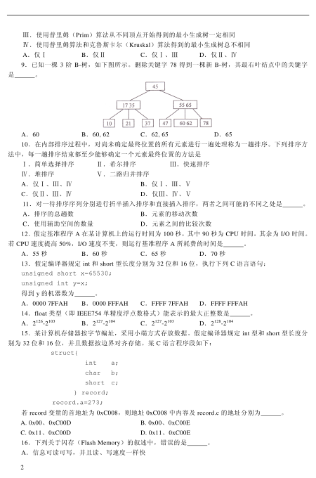
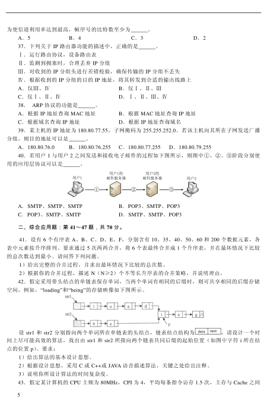
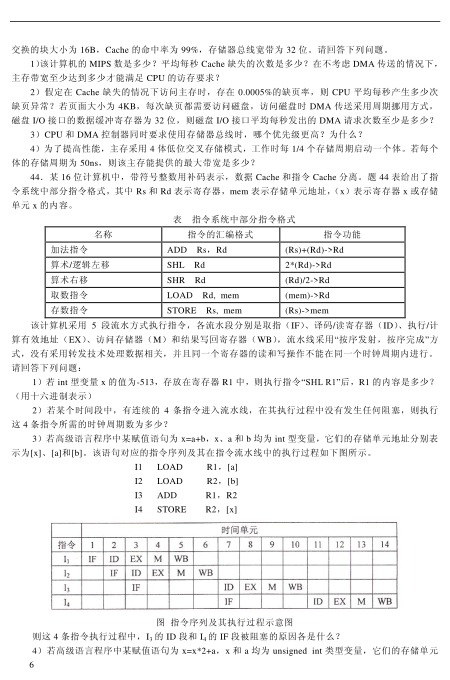
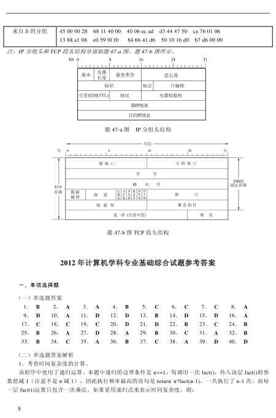
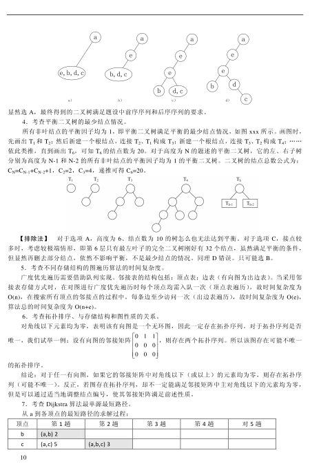
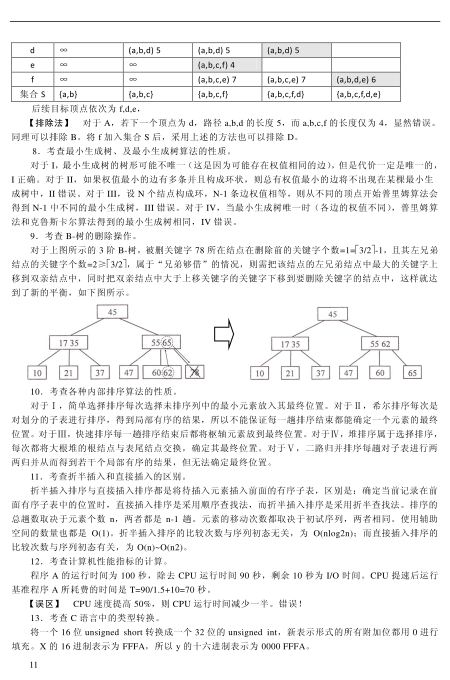
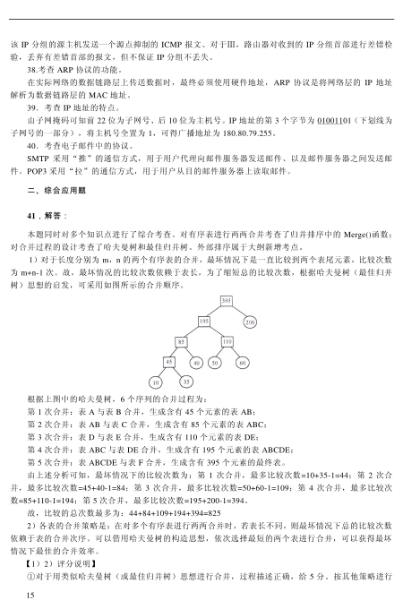
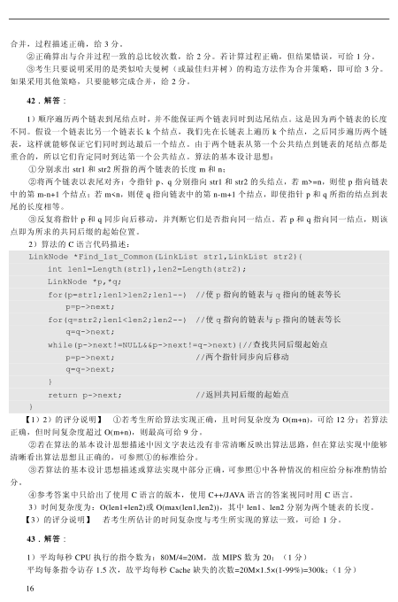

第 1 / 18 页

2012 年全国硕士研究生入学统一考试
计算机科学与技术学科联考
计算机学科专业基础综合试题
一、单项选择题：第1～40 小题，每小题2 分，共80 分。下列每题给出的四个选项中，只有一个
选项最符合试题要求。
1．求整数n(n≥0)阶乘的算法如下，其时间复杂度是 。
int fact(int n){
if (n<=1) return 1;
return n*fact(n-1);
}
A. O(log2n)
B. O(n)
C. O(nlog2n)
D. O(n2)
2．已知操作符包括„+‟、„-‟、„*‟、„/‟、„(‟和„)‟。将中缀表达式a+b-a*((c+d)/e-f)+g 转换为等价的后
缀表达式ab+acd+e/f-*-g+时，用栈来存放暂时还不能确定运算次序的操作符，若栈初始时为空，则转换
过程中同时保存在栈中的操作符的最大个数是 。
A．5
B．7
C．8
D．11
3．若一棵二叉树的前序遍历序列为a, e, b, d, c，后序遍历序列为b, c, d, e, a，则根结点的孩子结
点 。
A. 只有e
B. 有e、b
C. 有e、c
D. 无法确定
4．若平衡二叉树的高度为6，且所有非叶结点的平衡因子均为1，则该平衡二叉树的结点总数
为 。
A. 10
B. 20
C. 32
D. 33
5．对有n 个结点、e 条边且使用邻接表存储的有向图进行广度优先遍历，其算法时间复杂度是 。
A．O(n)
B．O(e)
C．O(n+e)
D．O(n*e)
6．若用邻接矩阵存储有向图，矩阵中主对角线以下的元素均为零，则关于该图拓扑序列的结论
是 。
A．存在，且唯一
B．存在，且不唯一
C．存在，可能不唯一
D．无法确定是否存在
7．对如下有向带权图，若采用迪杰斯特拉（Dijkstra）算法求从源点a 到其他各顶点的最短路径，
则得到的第一条最短路径的目标顶点是b，第二条最短路径的目标顶点是c，后续得到的其余各最短路径
的目标顶点依次是 。
A．d,e,f
B．e,d,f
C．f,d,e
D．f,e,d
8．下列关于最小生成树的叙述中，正确的是 。
Ⅰ．最小生成树的代价唯一
Ⅱ．所有权值最小的边一定会出现在所有的最小生成树中
查看 / 复制本页文字
2012 年全国硕士研究生入学统一考试
计算机科学与技术学科联考
计算机学科专业基础综合试题
一、单项选择题：第1～40 小题，每小题2 分，共80 分。下列每题给出的四个选项中，只有一个
选项最符合试题要求。
1．求整数n(n≥0)阶乘的算法如下，其时间复杂度是 。
int fact(int n){
if (n<=1) return 1;
return n*fact(n-1);
}
A. O(log2n)
B. O(n)
C. O(nlog2n)
D. O(n2)
2．已知操作符包括„+‟、„-‟、„*‟、„/‟、„(‟和„)‟。将中缀表达式a+b-a*((c+d)/e-f)+g 转换为等价的后
缀表达式ab+acd+e/f-*-g+时，用栈来存放暂时还不能确定运算次序的操作符，若栈初始时为空，则转换
过程中同时保存在栈中的操作符的最大个数是 。
A．5
B．7
C．8
D．11
3．若一棵二叉树的前序遍历序列为a, e, b, d, c，后序遍历序列为b, c, d, e, a，则根结点的孩子结
点 。
A. 只有e
B. 有e、b
C. 有e、c
D. 无法确定
4．若平衡二叉树的高度为6，且所有非叶结点的平衡因子均为1，则该平衡二叉树的结点总数
为 。
A. 10
B. 20
C. 32
D. 33
5．对有n 个结点、e 条边且使用邻接表存储的有向图进行广度优先遍历，其算法时间复杂度是 。
A．O(n)
B．O(e)
C．O(n+e)
D．O(n*e)
6．若用邻接矩阵存储有向图，矩阵中主对角线以下的元素均为零，则关于该图拓扑序列的结论
是 。
A．存在，且唯一
B．存在，且不唯一
C．存在，可能不唯一
D．无法确定是否存在
7．对如下有向带权图，若采用迪杰斯特拉（Dijkstra）算法求从源点a 到其他各顶点的最短路径，
则得到的第一条最短路径的目标顶点是b，第二条最短路径的目标顶点是c，后续得到的其余各最短路径
的目标顶点依次是 。
A．d,e,f
B．e,d,f
C．f,d,e
D．f,e,d
8．下列关于最小生成树的叙述中，正确的是 。
Ⅰ．最小生成树的代价唯一
Ⅱ．所有权值最小的边一定会出现在所有的最小生成树中
第 2 / 18 页

2
Ⅲ．使用普里姆（Prim）算法从不同顶点开始得到的最小生成树一定相同
Ⅳ．使用普里姆算法和克鲁斯卡尔（Kruskal）算法得到的最小生成树总不相同
A．仅Ⅰ
B．仅Ⅱ
C．仅Ⅰ、Ⅲ
D．仅Ⅱ、Ⅳ
9．已知一棵3 阶B-树，如下图所示。删除关键字78 得到一棵新B-树，其最右叶结点中的关键字
是
。
A．60
B．60, 62
C．62, 65
D．65
10．在内部排序过程中，对尚未确定最终位置的所有元素进行一遍处理称为一趟排序。下列排序方
法中，每一趟排序结束都至少能够确定一个元素最终位置的方法是
Ⅰ．简单选择排序
Ⅱ．希尔排序
Ⅲ．快速排序
Ⅳ．堆排序
Ⅴ．二路归并排序
A．仅Ⅰ、Ⅲ、Ⅳ
B．仅Ⅰ、Ⅲ、Ⅴ
C．仅Ⅱ、Ⅲ、Ⅳ
D．仅Ⅲ、Ⅳ、Ⅴ
11．对一待排序序列分别进行折半插入排序和直接插入排序，两者之间可能的不同之处是 。
A．排序的总趟数
B．元素的移动次数
C．使用辅助空间的数量
D．元素之间的比较次数
12．假定基准程序A 在某计算机上的运行时间为100 秒，其中90 秒为CPU 时间，其余为I/O 时间。
若CPU 速度提高50%，I/O 速度不变，则运行基准程序A 所耗费的时间是 。
A．55 秒
B．60 秒
C．65 秒 D．70 秒
13．假定编译器规定int 和short 型长度分别为32 位和16 位，执行下列C 语言语句：
unsigned short x=65530;
unsigned int y=x;
得到y 的机器数为 。
A．0000 7FFAH
B．0000 FFFAH
C．FFFF 7FFAH
D．FFFF FFFAH
14．float 类型（即IEEE754 单精度浮点数格式）能表示的最大正整数是 。
A．2126-2103
B．2127-2104
C．2127-2103
D．2128-2104
15．某计算机存储器按字节编址，采用小端方式存放数据。假定编译器规定int 型和short 型长度分
别为32 位和16 位，并且数据按边界对齐存储。某C 语言程序段如下：
struct{
int
a;
char
b;
short c;
} record;
record.a=273;
若record 变量的首地址为0xC008，则地址0xC008 中内容及record.c 的地址分别为 。
A. 0x00、0xC00D
B. 0x00、0xC00E
C. 0x11、0xC00D
D. 0x11、0xC00E
16．下列关于闪存（Flash Memory）的叙述中，错误的是 。
A．信息可读可写，并且读、写速度一样快
查看 / 复制本页文字
2
Ⅲ．使用普里姆（Prim）算法从不同顶点开始得到的最小生成树一定相同
Ⅳ．使用普里姆算法和克鲁斯卡尔（Kruskal）算法得到的最小生成树总不相同
A．仅Ⅰ
B．仅Ⅱ
C．仅Ⅰ、Ⅲ
D．仅Ⅱ、Ⅳ
9．已知一棵3 阶B-树，如下图所示。删除关键字78 得到一棵新B-树，其最右叶结点中的关键字
是
。
A．60
B．60, 62
C．62, 65
D．65
10．在内部排序过程中，对尚未确定最终位置的所有元素进行一遍处理称为一趟排序。下列排序方
法中，每一趟排序结束都至少能够确定一个元素最终位置的方法是
Ⅰ．简单选择排序
Ⅱ．希尔排序
Ⅲ．快速排序
Ⅳ．堆排序
Ⅴ．二路归并排序
A．仅Ⅰ、Ⅲ、Ⅳ
B．仅Ⅰ、Ⅲ、Ⅴ
C．仅Ⅱ、Ⅲ、Ⅳ
D．仅Ⅲ、Ⅳ、Ⅴ
11．对一待排序序列分别进行折半插入排序和直接插入排序，两者之间可能的不同之处是 。
A．排序的总趟数
B．元素的移动次数
C．使用辅助空间的数量
D．元素之间的比较次数
12．假定基准程序A 在某计算机上的运行时间为100 秒，其中90 秒为CPU 时间，其余为I/O 时间。
若CPU 速度提高50%，I/O 速度不变，则运行基准程序A 所耗费的时间是 。
A．55 秒
B．60 秒
C．65 秒 D．70 秒
13．假定编译器规定int 和short 型长度分别为32 位和16 位，执行下列C 语言语句：
unsigned short x=65530;
unsigned int y=x;
得到y 的机器数为 。
A．0000 7FFAH
B．0000 FFFAH
C．FFFF 7FFAH
D．FFFF FFFAH
14．float 类型（即IEEE754 单精度浮点数格式）能表示的最大正整数是 。
A．2126-2103
B．2127-2104
C．2127-2103
D．2128-2104
15．某计算机存储器按字节编址，采用小端方式存放数据。假定编译器规定int 型和short 型长度分
别为32 位和16 位，并且数据按边界对齐存储。某C 语言程序段如下：
struct{
int
a;
char
b;
short c;
} record;
record.a=273;
若record 变量的首地址为0xC008，则地址0xC008 中内容及record.c 的地址分别为 。
A. 0x00、0xC00D
B. 0x00、0xC00E
C. 0x11、0xC00D
D. 0x11、0xC00E
16．下列关于闪存（Flash Memory）的叙述中，错误的是 。
A．信息可读可写，并且读、写速度一样快
第 3 / 18 页
3
B．存储元由MOS 管组成，是一种半导体存储器
C．掉电后信息不丢失，是一种非易失性存储器
D．采用随机访问方式，可替代计算机外部存储器
17．假设某计算机按字编址，Cache 有4 个行，Cache 和主存之间交换的块大小为1 个字。若Cache
的内容初始为空，采用2 路组相联映射方式和LRU 替换策略。访问的主存地址依次为0,4,8,2,0,6,8,6,4,8
时，命中Cache 的次数是
。
A. 1
B. 2
C. 3
D. 4
18．某计算机的控制器采用微程序控制方式，微指令中的操作控制字段采用字段直接编码法，共有
33 个微命令，构成5 个互斥类，分别包含7、3、12、5 和6 个微命令，则操作控制字段至少有 。
A. 5 位
B. 6 位
C. 15 位
D. 33 位
19．某同步总线的时钟频率为100MHz，宽度为32 位，地址/数据线复用，每传输一个地址或数据
占用一个时钟周期。若该总线支持突发（猝发）传输方式，则一次“主存写”总线事务传输128 位数据
所需要的时间至少是
。
A. 20ns
B. 40ns
C. 50ns
D.80ns
20．下列关于USB 总线特性的描述中，错误的是 。
A. 可实现外设的即插即用和热拔插
B. 可通过级联方式连接多台外设
C. 是一种通信总线，连接不同外设
D. 同时可传输2 位数据，数据传输率高
21．下列选项中，在I/O 总线的数据线上传输的信息包括
。
Ⅰ．I/O 接口中的命令字
Ⅱ．I/O 接口中的状态字
Ⅲ．中断类型号
A．仅Ⅰ、Ⅱ
B．仅Ⅰ、Ⅲ
C．仅Ⅱ、Ⅲ
D．Ⅰ、Ⅱ、Ⅲ
22．响应外部中断的过程中，中断隐指令完成的操作，除保护断点外，还包括
。
Ⅰ．关中断
Ⅱ．保存通用寄存器的内容 Ⅲ．形成中断服务程序入口地址并送PC
A．仅Ⅰ、Ⅱ
B．仅Ⅰ、Ⅲ
C．仅Ⅱ、Ⅲ
D．Ⅰ、Ⅱ、Ⅲ
23．下列选项中，不可能在用户态发生的事件是 。
A．系统调用
B．外部中断
C．进程切换
D．缺页
24．中断处理和子程序调用都需要压栈以保护现场，中断处理一定会保存而子程序调用不需要保存
其内容的是 。
A．程序计数器
B．程序状态字寄存器
C．通用数据寄存器
D．通用地址寄存器
25．下列关于虚拟存储器的叙述中，正确的是
。
A．虚拟存储只能基于连续分配技术
B．虚拟存储只能基于非连续分配技术
C．虚拟存储容量只受外存容量的限制
D．虚拟存储容量只受内存容量的限制
26．操作系统的I/O 子系统通常由四个层次组成，每一层明确定义了与邻近层次的接口。其合理的
层次组织排列顺序是 。
A．用户级I/O 软件、设备无关软件、设备驱动程序、中断处理程序
B．用户级I/O 软件、设备无关软件、中断处理程序、设备驱动程序
C．用户级I/O 软件、设备驱动程序、设备无关软件、中断处理程序
D．用户级I/O 软件、中断处理程序、设备无关软件、设备驱动程序
27．假设5 个进程P0、P1、P2、P3、P4 共享三类资源R1、R2、R3，这些资源总数分别为18、6、
22。T0 时刻的资源分配情况如下表所示，此时存在的一个安全序列是 。
进程
已分配资源
资源最大需求
查看 / 复制本页文字
3 B．存储元由MOS 管组成，是一种半导体存储器 C．掉电后信息不丢失，是一种非易失性存储器 D．采用随机访问方式，可替代计算机外部存储器 17．假设某计算机按字编址，Cache 有4 个行，Cache 和主存之间交换的块大小为1 个字。若Cache 的内容初始为空，采用2 路组相联映射方式和LRU 替换策略。访问的主存地址依次为0,4,8,2,0,6,8,6,4,8 时，命中Cache 的次数是 。 A. 1 B. 2 C. 3 D. 4 18．某计算机的控制器采用微程序控制方式，微指令中的操作控制字段采用字段直接编码法，共有 33 个微命令，构成5 个互斥类，分别包含7、3、12、5 和6 个微命令，则操作控制字段至少有 。 A. 5 位 B. 6 位 C. 15 位 D. 33 位 19．某同步总线的时钟频率为100MHz，宽度为32 位，地址/数据线复用，每传输一个地址或数据 占用一个时钟周期。若该总线支持突发（猝发）传输方式，则一次“主存写”总线事务传输128 位数据 所需要的时间至少是 。 A. 20ns B. 40ns C. 50ns D.80ns 20．下列关于USB 总线特性的描述中，错误的是 。 A. 可实现外设的即插即用和热拔插 B. 可通过级联方式连接多台外设 C. 是一种通信总线，连接不同外设 D. 同时可传输2 位数据，数据传输率高 21．下列选项中，在I/O 总线的数据线上传输的信息包括 。 Ⅰ．I/O 接口中的命令字 Ⅱ．I/O 接口中的状态字 Ⅲ．中断类型号 A．仅Ⅰ、Ⅱ B．仅Ⅰ、Ⅲ C．仅Ⅱ、Ⅲ D．Ⅰ、Ⅱ、Ⅲ 22．响应外部中断的过程中，中断隐指令完成的操作，除保护断点外，还包括 。 Ⅰ．关中断 Ⅱ．保存通用寄存器的内容 Ⅲ．形成中断服务程序入口地址并送PC A．仅Ⅰ、Ⅱ B．仅Ⅰ、Ⅲ C．仅Ⅱ、Ⅲ D．Ⅰ、Ⅱ、Ⅲ 23．下列选项中，不可能在用户态发生的事件是 。 A．系统调用 B．外部中断 C．进程切换 D．缺页 24．中断处理和子程序调用都需要压栈以保护现场，中断处理一定会保存而子程序调用不需要保存 其内容的是 。 A．程序计数器 B．程序状态字寄存器 C．通用数据寄存器 D．通用地址寄存器 25．下列关于虚拟存储器的叙述中，正确的是 。 A．虚拟存储只能基于连续分配技术 B．虚拟存储只能基于非连续分配技术 C．虚拟存储容量只受外存容量的限制 D．虚拟存储容量只受内存容量的限制 26．操作系统的I/O 子系统通常由四个层次组成，每一层明确定义了与邻近层次的接口。其合理的 层次组织排列顺序是 。 A．用户级I/O 软件、设备无关软件、设备驱动程序、中断处理程序 B．用户级I/O 软件、设备无关软件、中断处理程序、设备驱动程序 C．用户级I/O 软件、设备驱动程序、设备无关软件、中断处理程序 D．用户级I/O 软件、中断处理程序、设备无关软件、设备驱动程序 27．假设5 个进程P0、P1、P2、P3、P4 共享三类资源R1、R2、R3，这些资源总数分别为18、6、 22。T0 时刻的资源分配情况如下表所示，此时存在的一个安全序列是 。 进程 已分配资源 资源最大需求
第 4 / 18 页
4
R1
R2
R3
R1
R2
R3
P0
3
2
3
5
5
10
P1
4
0
3
5
3
6
P2
4
0
5
4
0
11
P3
2
0
4
4
2
5
P4
3
1
4
4
2
4
A. P0, P2, P4, P1, P3
B. P1, P0, P3, P4, P2
C. P2, P1, P0, P3, P4
D. P3, P4, P2, P1, P0
28．若一个用户进程通过read 系统调用读取一个磁盘文件中的数据，则下列关于此过程的叙述中，
正确的是 。
Ⅰ．若该文件的数据不在内存，则该进程进入睡眠等待状态
Ⅱ．请求read 系统调用会导致CPU 从用户态切换到核心态
Ⅲ．read 系统调用的参数应包含文件的名称
A. 仅Ⅰ、Ⅱ
B. 仅Ⅰ、Ⅲ
C. 仅Ⅱ、Ⅲ
D. Ⅰ、Ⅱ和Ⅲ
29．一个多道批处理系统中仅有P1 和P2 两个作业，P2 比P1 晚5ms 到达，它们的计算和I/O 操作
顺序如下：
P1：计算60ms，I/O 80ms，计算20ms
P2：计算120ms，I/O 40ms，计算40ms
若不考虑调度和切换时间，则完成两个作业需要的时间最少是
。
A．240ms
B．260ms
C．340ms
D．360ms
30．若某单处理器多进程系统中有多个就绪态进程，则下列关于处理机调度的叙述中，错误的
是 。
A．在进程结束时能进行处理机调度
B．创建新进程后能进行处理机调度
C．在进程处于临界区时不能进行处理机调度
D．在系统调用完成并返回用户态时能进行处理机调度
31．下列关于进程和线程的叙述中，正确的是 。
A．不管系统是否支持线程，进程都是资源分配的基本单位
B．线程是资源分配的基本单位，进程是调度的基本单位
C．系统级线程和用户级线程的切换都需要内核的支持
D．同一进程中的各个线程拥有各自不同的地址空间
32．下列选项中，不能改善磁盘设备I/O 性能的是
。
A．重排I/O 请求次序
B．在一个磁盘上设置多个分区
C．预读和滞后写
D．优化文件物理块的分布
33．在TCP/IP 体系结构中，直接为ICMP 提供服务的协议是
。
A．PPP
B．IP
C．UDP
D．TCP
34．在物理层接口特性中，用于描述完成每种功能的事件发生顺序的是 。
A．机械特性 B．功能特性
C．过程特性
D．电气特性
35．以太网的MAC 协议提供的是
。
A．无连接不可靠服务
B．无连接可靠服务
C．有连接不可靠服务
D．有连接可靠服务
36．两台主机之间的数据链路层采用后退N 帧协议（GBN）传输数据，数据传输速率为16 kbps，
单向传播时延为270ms，数据帧长度范围是128~512 字节，接收方总是以与数据帧等长的帧进行确认。
查看 / 复制本页文字
4 R1 R2 R3 R1 R2 R3 P0 3 2 3 5 5 10 P1 4 0 3 5 3 6 P2 4 0 5 4 0 11 P3 2 0 4 4 2 5 P4 3 1 4 4 2 4 A. P0, P2, P4, P1, P3 B. P1, P0, P3, P4, P2 C. P2, P1, P0, P3, P4 D. P3, P4, P2, P1, P0 28．若一个用户进程通过read 系统调用读取一个磁盘文件中的数据，则下列关于此过程的叙述中， 正确的是 。 Ⅰ．若该文件的数据不在内存，则该进程进入睡眠等待状态 Ⅱ．请求read 系统调用会导致CPU 从用户态切换到核心态 Ⅲ．read 系统调用的参数应包含文件的名称 A. 仅Ⅰ、Ⅱ B. 仅Ⅰ、Ⅲ C. 仅Ⅱ、Ⅲ D. Ⅰ、Ⅱ和Ⅲ 29．一个多道批处理系统中仅有P1 和P2 两个作业，P2 比P1 晚5ms 到达，它们的计算和I/O 操作 顺序如下： P1：计算60ms，I/O 80ms，计算20ms P2：计算120ms，I/O 40ms，计算40ms 若不考虑调度和切换时间，则完成两个作业需要的时间最少是 。 A．240ms B．260ms C．340ms D．360ms 30．若某单处理器多进程系统中有多个就绪态进程，则下列关于处理机调度的叙述中，错误的 是 。 A．在进程结束时能进行处理机调度 B．创建新进程后能进行处理机调度 C．在进程处于临界区时不能进行处理机调度 D．在系统调用完成并返回用户态时能进行处理机调度 31．下列关于进程和线程的叙述中，正确的是 。 A．不管系统是否支持线程，进程都是资源分配的基本单位 B．线程是资源分配的基本单位，进程是调度的基本单位 C．系统级线程和用户级线程的切换都需要内核的支持 D．同一进程中的各个线程拥有各自不同的地址空间 32．下列选项中，不能改善磁盘设备I/O 性能的是 。 A．重排I/O 请求次序 B．在一个磁盘上设置多个分区 C．预读和滞后写 D．优化文件物理块的分布 33．在TCP/IP 体系结构中，直接为ICMP 提供服务的协议是 。 A．PPP B．IP C．UDP D．TCP 34．在物理层接口特性中，用于描述完成每种功能的事件发生顺序的是 。 A．机械特性 B．功能特性 C．过程特性 D．电气特性 35．以太网的MAC 协议提供的是 。 A．无连接不可靠服务 B．无连接可靠服务 C．有连接不可靠服务 D．有连接可靠服务 36．两台主机之间的数据链路层采用后退N 帧协议（GBN）传输数据，数据传输速率为16 kbps， 单向传播时延为270ms，数据帧长度范围是128~512 字节，接收方总是以与数据帧等长的帧进行确认。
第 5 / 18 页

5
为使信道利用率达到最高，帧序号的比特数至少为 。
A．5 B．4 C．3
D．2
37．下列关于IP 路由器功能的描述中，正确的是 。
Ⅰ．运行路由协议，设备路由表
Ⅱ．监测到拥塞时，合理丢弃IP 分组
Ⅲ．对收到的IP 分组头进行差错校验，确保传输的IP 分组不丢失
Ⅳ．根据收到的IP 分组的目的IP 地址，将其转发到合适的输出线路上
A．仅Ⅲ、Ⅳ
B．仅Ⅰ、Ⅱ、Ⅲ
C．仅Ⅰ、Ⅱ、Ⅳ
D．Ⅰ、Ⅱ、Ⅲ、Ⅳ
38． ARP 协议的功能是 。
A．根据IP 地址查询MAC 地址 B．根据MAC 地址查询IP 地址
C．根据域名查询IP 地址 D．根据IP 地址查询域名
39．某主机的IP 地址为180.80.77.55，子网掩码为255.255.252.0。若该主机向其所在子网发送广播
分组，则目的地址可以是 。
A．180.80.76.0
B．180.80.76.255
C．180.80.77.255 D．180.80.79.255
40．若用户1 与用户2 之间发送和接收电子邮件的过程如下图所示，则图中①、②、③阶段分别使
用的应用层协议可以是 。
用户1
①
②
③
用户1的
邮件服务器
用户2的
邮件服务器
用户2
A．SMTP、SMTP、SMTP
B．POP3、SMTP、POP3
C．POP3、SMTP、SMTP
D．SMTP、SMTP、POP3
二、综合应用题：第41～47 题，共70 分。
41．设有6 个有序表A、B、C、D、E、F，分别含有10、35、40、50、60 和200 个数据元素，各
表中元素按升序排列。要求通过5 次两两合并，将6 个表最终合并成1 个升序表，并在最坏情况下比较
的总次数达到最小。请问答下列问题。
1）给出完整的合并过程，并求出最坏情况下比较的总次数。
2）根据你的合并过程，描述N（N≥2）个不等长升序表的合并策略，并说明理由。
42．假定采用带头结点的单链表保存单词，当两个单词有相同的后缀时，则可共享相同的后缀存储
空间，例如，“loading”和“being”的存储映像如下图所示。
设str1 和str2 分别指向两个单词所在单链表的头结点，链表结点结构为
，请设计一个时
间上尽可能高效的算法，找出由str1 和str2 所指向两个链表共同后缀的起始位置（如图中字符i 所在结
点的位置p）。要求：
1）给出算法的基本设计思想。
2）根据设计思想，采用C 或C++或JAVA 语音描述算法，关键之处给出注释。
3）说明你所设计算法的时间复杂度。
43．假定某计算机的CPU 主频为80MHz，CPI 为4，平均每条指令访存1.5 次，主存与Cache 之间
查看 / 复制本页文字
5 为使信道利用率达到最高，帧序号的比特数至少为 。 A．5 B．4 C．3 D．2 37．下列关于IP 路由器功能的描述中，正确的是 。 Ⅰ．运行路由协议，设备路由表 Ⅱ．监测到拥塞时，合理丢弃IP 分组 Ⅲ．对收到的IP 分组头进行差错校验，确保传输的IP 分组不丢失 Ⅳ．根据收到的IP 分组的目的IP 地址，将其转发到合适的输出线路上 A．仅Ⅲ、Ⅳ B．仅Ⅰ、Ⅱ、Ⅲ C．仅Ⅰ、Ⅱ、Ⅳ D．Ⅰ、Ⅱ、Ⅲ、Ⅳ 38． ARP 协议的功能是 。 A．根据IP 地址查询MAC 地址 B．根据MAC 地址查询IP 地址 C．根据域名查询IP 地址 D．根据IP 地址查询域名 39．某主机的IP 地址为180.80.77.55，子网掩码为255.255.252.0。若该主机向其所在子网发送广播 分组，则目的地址可以是 。 A．180.80.76.0 B．180.80.76.255 C．180.80.77.255 D．180.80.79.255 40．若用户1 与用户2 之间发送和接收电子邮件的过程如下图所示，则图中①、②、③阶段分别使 用的应用层协议可以是 。 用户1 ① ② ③ 用户1的 邮件服务器 用户2的 邮件服务器 用户2 A．SMTP、SMTP、SMTP B．POP3、SMTP、POP3 C．POP3、SMTP、SMTP D．SMTP、SMTP、POP3 二、综合应用题：第41～47 题，共70 分。 41．设有6 个有序表A、B、C、D、E、F，分别含有10、35、40、50、60 和200 个数据元素，各 表中元素按升序排列。要求通过5 次两两合并，将6 个表最终合并成1 个升序表，并在最坏情况下比较 的总次数达到最小。请问答下列问题。 1）给出完整的合并过程，并求出最坏情况下比较的总次数。 2）根据你的合并过程，描述N（N≥2）个不等长升序表的合并策略，并说明理由。 42．假定采用带头结点的单链表保存单词，当两个单词有相同的后缀时，则可共享相同的后缀存储 空间，例如，“loading”和“being”的存储映像如下图所示。 设str1 和str2 分别指向两个单词所在单链表的头结点，链表结点结构为 ，请设计一个时 间上尽可能高效的算法，找出由str1 和str2 所指向两个链表共同后缀的起始位置（如图中字符i 所在结 点的位置p）。要求： 1）给出算法的基本设计思想。 2）根据设计思想，采用C 或C++或JAVA 语音描述算法，关键之处给出注释。 3）说明你所设计算法的时间复杂度。 43．假定某计算机的CPU 主频为80MHz，CPI 为4，平均每条指令访存1.5 次，主存与Cache 之间
第 6 / 18 页

6
交换的块大小为16B，Cache 的命中率为99%，存储器总线宽带为32 位。请回答下列问题。
1）该计算机的MIPS 数是多少？平均每秒Cache 缺失的次数是多少？在不考虑DMA 传送的情况下，
主存带宽至少达到多少才能满足CPU 的访存要求？
2）假定在Cache 缺失的情况下访问主存时，存在0.0005%的缺页率，则CPU 平均每秒产生多少次
缺页异常？若页面大小为4KB，每次缺页都需要访问磁盘，访问磁盘时DMA 传送采用周期挪用方式，
磁盘I/O 接口的数据缓冲寄存器为32 位，则磁盘I/O 接口平均每秒发出的DMA 请求次数至少是多少？
3）CPU 和DMA 控制器同时要求使用存储器总线时，哪个优先级更高？为什么？
4）为了提高性能，主存采用4 体低位交叉存储模式，工作时每1/4 个存储周期启动一个体。若每个
体的存储周期为50ns，则该主存能提供的最大带宽是多少？
44．某16 位计算机中，带符号整数用补码表示，数据Cache 和指令Cache 分离。题44 表给出了指
令系统中部分指令格式，其中Rs 和Rd 表示寄存器，mem 表示存储单元地址，（x）表示寄存器x 或存储
单元x 的内容。
表 指令系统中部分指令格式
名称
指令的汇编格式
指令功能
加法指令
ADD Rs，Rd
(Rs)+(Rd)->Rd
算术/逻辑左移
SHL Rd
2*(Rd)->Rd
算术右移
SHR Rd
(Rd)/2->Rd
取数指令
LOAD Rd, mem
(mem)->Rd
存数指令
STORE Rs, mem
(Rs)->mem
该计算机采用5 段流水方式执行指令，各流水段分别是取指（IF）、译码/读寄存器（ID）、执行/计
算有效地址（EX）、访问存储器（M）和结果写回寄存器（WB），流水线采用“按序发射，按序完成”方
式，没有采用转发技术处理数据相关，并且同一个寄存器的读和写操作不能在同一个时钟周期内进行。
请回答下列问题：
1）若int 型变量x 的值为-513，存放在寄存器R1 中，则执行指令“SHL R1”后，R1 的内容是多少？
（用十六进制表示）
2）若某个时间段中，有连续的4 条指令进入流水线，在其执行过程中没有发生任何阻塞，则执行
这4 条指令所需的时钟周期数为多少？
3）若高级语言程序中某赋值语句为x=a+b，x、a 和b 均为int 型变量，它们的存储单元地址分别表
示为[x]、[a]和[b]。该语句对应的指令序列及其在指令流水线中的执行过程如下图所示。
I1
LOAD
R1，[a]
I2
LOAD
R2，[b]
I3
ADD
R1，R2
I4
STORE
R2，[x]
图 指令序列及其执行过程示意图
则这4 条指令执行过程中，I3 的ID 段和I4 的IF 段被阻塞的原因各是什么？
4）若高级语言程序中某赋值语句为x=x*2+a，x 和a 均为unsigned int 类型变量，它们的存储单元
查看 / 复制本页文字
6 交换的块大小为16B，Cache 的命中率为99%，存储器总线宽带为32 位。请回答下列问题。 1）该计算机的MIPS 数是多少？平均每秒Cache 缺失的次数是多少？在不考虑DMA 传送的情况下， 主存带宽至少达到多少才能满足CPU 的访存要求？ 2）假定在Cache 缺失的情况下访问主存时，存在0.0005%的缺页率，则CPU 平均每秒产生多少次 缺页异常？若页面大小为4KB，每次缺页都需要访问磁盘，访问磁盘时DMA 传送采用周期挪用方式， 磁盘I/O 接口的数据缓冲寄存器为32 位，则磁盘I/O 接口平均每秒发出的DMA 请求次数至少是多少？ 3）CPU 和DMA 控制器同时要求使用存储器总线时，哪个优先级更高？为什么？ 4）为了提高性能，主存采用4 体低位交叉存储模式，工作时每1/4 个存储周期启动一个体。若每个 体的存储周期为50ns，则该主存能提供的最大带宽是多少？ 44．某16 位计算机中，带符号整数用补码表示，数据Cache 和指令Cache 分离。题44 表给出了指 令系统中部分指令格式，其中Rs 和Rd 表示寄存器，mem 表示存储单元地址，（x）表示寄存器x 或存储 单元x 的内容。 表 指令系统中部分指令格式 名称 指令的汇编格式 指令功能 加法指令 ADD Rs，Rd (Rs)+(Rd)->Rd 算术/逻辑左移 SHL Rd 2*(Rd)->Rd 算术右移 SHR Rd (Rd)/2->Rd 取数指令 LOAD Rd, mem (mem)->Rd 存数指令 STORE Rs, mem (Rs)->mem 该计算机采用5 段流水方式执行指令，各流水段分别是取指（IF）、译码/读寄存器（ID）、执行/计 算有效地址（EX）、访问存储器（M）和结果写回寄存器（WB），流水线采用“按序发射，按序完成”方 式，没有采用转发技术处理数据相关，并且同一个寄存器的读和写操作不能在同一个时钟周期内进行。 请回答下列问题： 1）若int 型变量x 的值为-513，存放在寄存器R1 中，则执行指令“SHL R1”后，R1 的内容是多少？ （用十六进制表示） 2）若某个时间段中，有连续的4 条指令进入流水线，在其执行过程中没有发生任何阻塞，则执行 这4 条指令所需的时钟周期数为多少？ 3）若高级语言程序中某赋值语句为x=a+b，x、a 和b 均为int 型变量，它们的存储单元地址分别表 示为[x]、[a]和[b]。该语句对应的指令序列及其在指令流水线中的执行过程如下图所示。 I1 LOAD R1，[a] I2 LOAD R2，[b] I3 ADD R1，R2 I4 STORE R2，[x] 图 指令序列及其执行过程示意图 则这4 条指令执行过程中，I3 的ID 段和I4 的IF 段被阻塞的原因各是什么？ 4）若高级语言程序中某赋值语句为x=x*2+a，x 和a 均为unsigned int 类型变量，它们的存储单元
第 7 / 18 页
7
地址分别表示为[x]、[a]，则执行这条语句至少需要多少个时钟周期？要求模仿题44 图画出这条语句对
应的指令序列及其在流水线中的执行过程示意图。
45．某请求分页系统的局部页面置换策略如下：
系统从0 时刻开始扫描，每隔5 个时间单位扫描一轮驻留集（扫描时间忽略不计），本轮没有被访
问过的页框将被系统回收，并放入到空闲页框链尾，其中内容在下一次分配之前不被清空。当发生缺页
时，如果该页曾被使用过且还在空闲页链表中，则重新放回进程的驻留集中；否则，从空闲页框链表头
部取出一个页框。
假设不考虑其它进程的影响和系统开销。初始时进程驻留集为空。目前系统空闲页框链表中页框号
依次为32、15、21、41。进程P 依次访问的<虚拟页号，访问时刻>是：<1,1>、<3,2>、<0,4>、<0,6>、
<1,11>、<0,13>、<2,14>。请回答下列问题。
1）访问<0,4>时，对应的页框号是什么？
2）访问<1,11>时，对应的页框号是什么？说明理由。
3）访问<2,14>时，对应的页框号是什么？说明理由。
4）该策略是否适合于时间局部性好的程序？说明理由。
46．某文件系统空间的最大容量为4TB（1TB=240），以磁盘块为基本分配单位。磁盘块大小为1KB。
文件控制块（FCB）包含一个512B 的索引表区。请回答下列问题。
1）假设索引表区仅采用直接索引结构，索引表区存放文件占用的磁盘块号，索引表项中块号最少占
多少字节？可支持的单个文件最大长度是多少字节？
2）假设索引表区采用如下结构：第0~7 字节采用<起始块号，块数>格式表示文件创建时预分配的
连续存储空间，其中起始块号占6B，块数占2B；剩余504 字节采用直接索引结构，一个索引项占6B，
则可支持的单个文件最大长度是多少字节？为了使单个文件的长度达到最大，请指出起始块号和块数分
别所占字节数的合理值并说明理由。
47．主机H 通过快速以太网连接Internet，IP 地址为192.168.0.8，服务器S 的IP 地址为211.68.71.80。
H 与S 使用TCP 通信时，在H 上捕获的其中5 个IP 分组如 题47-a 表所示。
题47-a 表
编号
IP 分组的前40 字节内容（十六进制）
1
45 00 00 30
01 9b 40 00
80 06 1d e8
c0 a8 00 08
d3 44 47 50
0b d9 13 88
84 6b 41 c5
00 00 00 00
70 02 43 80
5d b0 00 00
2
43 00 00 30
00 00 40 00
31 06 6e 83
d3 44 47 50
c0 a8 00 08
13 88 0b d9
e0 59 9f ef
84 6b 41 c6
70 12 16 d0
37 e1 00 00
3
45 00 00 28
01 9c 40 00
80 06 1d ef
c0 a8 00 08
d3 44 47 50
0b d9 13 88
84 6b 41 c6
e0 59 9f f0
50 f0 43 80
2b 32 00 00
4
45 00 00 38
01 9d 40 00
80 06 1d de
c0 a8 00 08
d3 44 47 50
0b d9 13 88
84 6b 41 c6
e0 59 9f f0
50 18 43 80
e6 55 00 00
5
45 00 00 28
68 11 40 00
31 06 06 7a
d3 44 47 50
c0 a8 00 08
13 88 0b d9
e0 59 9f f0
84 6b 41 d6
50 10 16 d0
57 d2 00 00
回答下列问题。
1）题47-a 表中的IP 分组中，哪几个是由H 发送的？哪几个完成了TCP 连接建立过程？哪几个在
通过快速以太网传输时进行了填充？
2）根据题47-a 表中的IP 分组，分析S 已经收到的应用层数据字节数是多少？
3）若题47-a 表中的某个IP 分组在S 发出时的前40 字节如题47-b 表所示，则该IP 分组到达H 时
经过了多少个路由器？
题47-b 表
查看 / 复制本页文字
7 地址分别表示为[x]、[a]，则执行这条语句至少需要多少个时钟周期？要求模仿题44 图画出这条语句对 应的指令序列及其在流水线中的执行过程示意图。 45．某请求分页系统的局部页面置换策略如下： 系统从0 时刻开始扫描，每隔5 个时间单位扫描一轮驻留集（扫描时间忽略不计），本轮没有被访 问过的页框将被系统回收，并放入到空闲页框链尾，其中内容在下一次分配之前不被清空。当发生缺页 时，如果该页曾被使用过且还在空闲页链表中，则重新放回进程的驻留集中；否则，从空闲页框链表头 部取出一个页框。 假设不考虑其它进程的影响和系统开销。初始时进程驻留集为空。目前系统空闲页框链表中页框号 依次为32、15、21、41。进程P 依次访问的<虚拟页号，访问时刻>是：<1,1>、<3,2>、<0,4>、<0,6>、 <1,11>、<0,13>、<2,14>。请回答下列问题。 1）访问<0,4>时，对应的页框号是什么？ 2）访问<1,11>时，对应的页框号是什么？说明理由。 3）访问<2,14>时，对应的页框号是什么？说明理由。 4）该策略是否适合于时间局部性好的程序？说明理由。 46．某文件系统空间的最大容量为4TB（1TB=240），以磁盘块为基本分配单位。磁盘块大小为1KB。 文件控制块（FCB）包含一个512B 的索引表区。请回答下列问题。 1）假设索引表区仅采用直接索引结构，索引表区存放文件占用的磁盘块号，索引表项中块号最少占 多少字节？可支持的单个文件最大长度是多少字节？ 2）假设索引表区采用如下结构：第0~7 字节采用<起始块号，块数>格式表示文件创建时预分配的 连续存储空间，其中起始块号占6B，块数占2B；剩余504 字节采用直接索引结构，一个索引项占6B， 则可支持的单个文件最大长度是多少字节？为了使单个文件的长度达到最大，请指出起始块号和块数分 别所占字节数的合理值并说明理由。 47．主机H 通过快速以太网连接Internet，IP 地址为192.168.0.8，服务器S 的IP 地址为211.68.71.80。 H 与S 使用TCP 通信时，在H 上捕获的其中5 个IP 分组如 题47-a 表所示。 题47-a 表 编号 IP 分组的前40 字节内容（十六进制） 1 45 00 00 30 01 9b 40 00 80 06 1d e8 c0 a8 00 08 d3 44 47 50 0b d9 13 88 84 6b 41 c5 00 00 00 00 70 02 43 80 5d b0 00 00 2 43 00 00 30 00 00 40 00 31 06 6e 83 d3 44 47 50 c0 a8 00 08 13 88 0b d9 e0 59 9f ef 84 6b 41 c6 70 12 16 d0 37 e1 00 00 3 45 00 00 28 01 9c 40 00 80 06 1d ef c0 a8 00 08 d3 44 47 50 0b d9 13 88 84 6b 41 c6 e0 59 9f f0 50 f0 43 80 2b 32 00 00 4 45 00 00 38 01 9d 40 00 80 06 1d de c0 a8 00 08 d3 44 47 50 0b d9 13 88 84 6b 41 c6 e0 59 9f f0 50 18 43 80 e6 55 00 00 5 45 00 00 28 68 11 40 00 31 06 06 7a d3 44 47 50 c0 a8 00 08 13 88 0b d9 e0 59 9f f0 84 6b 41 d6 50 10 16 d0 57 d2 00 00 回答下列问题。 1）题47-a 表中的IP 分组中，哪几个是由H 发送的？哪几个完成了TCP 连接建立过程？哪几个在 通过快速以太网传输时进行了填充？ 2）根据题47-a 表中的IP 分组，分析S 已经收到的应用层数据字节数是多少？ 3）若题47-a 表中的某个IP 分组在S 发出时的前40 字节如题47-b 表所示，则该IP 分组到达H 时 经过了多少个路由器？ 题47-b 表
第 8 / 18 页

8
来自S 的分组
45 00 00 28 68 11 40 00 40 06 ec ad d3 44 47 50 ca 76 01 06
13 88 a1 08 e0 59 9f f0
84 6b 41 d6 50 10 16 d0 b7 d6 00 00
注：IP 分组头和TCP 段头结构分别如题47-a 图，题47-b 图所示。
题47-a 图 IP 分组头结构
题47-b 图TCP 段头结构
2012 年计算机学科专业基础综合试题参考答案
一、单项选择题
（一）单选题答案
1． B
2． A
3． A
4． B
5． C
6． C
7． C
8． A
9． D
10． A
11． D
12． D
13． B
14． D
15． D
16． A
17． C
18． C
19． C
20． D
21． D
22． B
23． C
24． B
25． B
26． A
27． D
28． A
29． B
30． C
31． A
32． B
33． B
34． C
35． A
36． B
37． C
38． A
39． D
40． D
（二）单选题答案解析
1．考查时间复杂度的计算。
该程序中使用了递归运算。本题中递归的边界条件是n<=1，每调用一次fact()，传入该层fact()的参
数值减1（注意不是n 减1），因此执行频率最高的语句是return n*fact(n-1)，一共执行了n-1 次，而每
一层fact(i)运算只包含一次乘法。如果采用递归式来表示时间复杂度，则：
查看 / 复制本页文字
8 来自S 的分组 45 00 00 28 68 11 40 00 40 06 ec ad d3 44 47 50 ca 76 01 06 13 88 a1 08 e0 59 9f f0 84 6b 41 d6 50 10 16 d0 b7 d6 00 00 注：IP 分组头和TCP 段头结构分别如题47-a 图，题47-b 图所示。 题47-a 图 IP 分组头结构 题47-b 图TCP 段头结构 2012 年计算机学科专业基础综合试题参考答案 一、单项选择题 （一）单选题答案 1． B 2． A 3． A 4． B 5． C 6． C 7． C 8． A 9． D 10． A 11． D 12． D 13． B 14． D 15． D 16． A 17． C 18． C 19． C 20． D 21． D 22． B 23． C 24． B 25． B 26． A 27． D 28． A 29． B 30． C 31． A 32． B 33． B 34． C 35． A 36． B 37． C 38． A 39． D 40． D （二）单选题答案解析 1．考查时间复杂度的计算。 该程序中使用了递归运算。本题中递归的边界条件是n<=1，每调用一次fact()，传入该层fact()的参 数值减1（注意不是n 减1），因此执行频率最高的语句是return n*fact(n-1)，一共执行了n-1 次，而每 一层fact(i)运算只包含一次乘法。如果采用递归式来表示时间复杂度，则：
第 9 / 18 页
9
时间复杂度为O(n)。
2．考查栈的应用、表达式求值。
表达式求值是栈的典型应用。通常涉及中缀表达式和后缀表达式。中缀表达式不仅依赖运算符的优
先级，还要处理括号。后缀表达式的运算符在表达式的后面且没有括号，其形式已经包含了运算符的优
先级。所以从中缀表达式转换到后缀表达式需要用运算符栈对中缀表达式进行处理，使其包含运算法优
先级的信息，从而转换为后缀表达式的形式。转换过程如下表：
运算符栈
中缀未处理部分
后缀生成部分
#
a+b-a*((c+d)/e-f)+g
#
+b-a*((c+d)/e-f)+g
a
+
b-a*((c+d)/e-f)+g
a
+
-a*((c+d)/e-f)+g
ab
-
a*((c+d)/e-f)+g
ab+
-
*((c+d)/e-f)+g
ab+a
-*
((c+d)/e-f)+g
ab+a
-*((
c+d)/e-f)+g
ab+a
-*((
+d)/e-f)+g
ab+ac
-*((+
d)/e-f)+g
ab+ac
-*((+
)/e-f)+g
ab+acd
-*(
/e-f)+g
ab+acd+
-*(/
e-f)+g
ab+acd+
-*(/
-f)+g
ab+acd+e
-*(-
f)+g
ab+acd+e/
-*(-
)+g
ab+acd+e/f
-*
+g
ab+acd+e/f-
-
+g
ab+acd+e/f-*
#
+g
ab+acd+e/f-*-
+
g
ab+acd+e/f-*-
#
ab+acd+e/f-*-g
3．考查树的遍历、及由遍历序列确定二叉树的树形。
前序序列和后序序列不能唯一确定一棵二叉树，但可以确定二叉树中结点的祖先关系：当两个结点
的前序序列为XY 与后序序列为YX 时，则X 为Y 的祖先。考虑前序序列a,e,b,d,c、后序序列b,c,d,e,a，
可知a 为根结点，e 为a 的孩子结点；此外，a 的孩子结点的前序序列e,b,d,c、后序序列b,c,d,e，可知e
是bcd 的祖先，故根结点的孩子结点只有e。本题答案为A。
【特殊法】 前序序列和后序序列对应着多棵不同的二叉树树形，我们只需画出满足该条件的任一棵
二叉树即可，任意一棵二叉树必定满足正确选项的要求。
查看 / 复制本页文字
9 时间复杂度为O(n)。 2．考查栈的应用、表达式求值。 表达式求值是栈的典型应用。通常涉及中缀表达式和后缀表达式。中缀表达式不仅依赖运算符的优 先级，还要处理括号。后缀表达式的运算符在表达式的后面且没有括号，其形式已经包含了运算符的优 先级。所以从中缀表达式转换到后缀表达式需要用运算符栈对中缀表达式进行处理，使其包含运算法优 先级的信息，从而转换为后缀表达式的形式。转换过程如下表： 运算符栈 中缀未处理部分 后缀生成部分 # a+b-a*((c+d)/e-f)+g # +b-a*((c+d)/e-f)+g a + b-a*((c+d)/e-f)+g a + -a*((c+d)/e-f)+g ab - a*((c+d)/e-f)+g ab+ - *((c+d)/e-f)+g ab+a -* ((c+d)/e-f)+g ab+a -*(( c+d)/e-f)+g ab+a -*(( +d)/e-f)+g ab+ac -*((+ d)/e-f)+g ab+ac -*((+ )/e-f)+g ab+acd -*( /e-f)+g ab+acd+ -*(/ e-f)+g ab+acd+ -*(/ -f)+g ab+acd+e -*(- f)+g ab+acd+e/ -*(- )+g ab+acd+e/f -* +g ab+acd+e/f- - +g ab+acd+e/f-* # +g ab+acd+e/f-*- + g ab+acd+e/f-*- # ab+acd+e/f-*-g 3．考查树的遍历、及由遍历序列确定二叉树的树形。 前序序列和后序序列不能唯一确定一棵二叉树，但可以确定二叉树中结点的祖先关系：当两个结点 的前序序列为XY 与后序序列为YX 时，则X 为Y 的祖先。考虑前序序列a,e,b,d,c、后序序列b,c,d,e,a， 可知a 为根结点，e 为a 的孩子结点；此外，a 的孩子结点的前序序列e,b,d,c、后序序列b,c,d,e，可知e 是bcd 的祖先，故根结点的孩子结点只有e。本题答案为A。 【特殊法】 前序序列和后序序列对应着多棵不同的二叉树树形，我们只需画出满足该条件的任一棵 二叉树即可，任意一棵二叉树必定满足正确选项的要求。
第 10 / 18 页

10
a
e,b,d,c
a
b,d,c
e
a
d,c
e
e
b
a
e
e
b
d
c
a）
b）
c）
d）
显然选A，最终得到的二叉树满足题设中前序序列和后序序列的要求。
4．考查平衡二叉树的最少结点情况。
所有非叶结点的平衡因子均为1，即平衡二叉树满足平衡的最少结点情况，如图xxx 所示。画图时，
先画出T1 和T2；然后新建一个根结点，连接T2、T1 构成T3；新建一个根结点，连接T3、T2 构成T4；„„
依此类推，直到画出T6，可知T6 的结点数为20。对于高度为N 的题述的平衡二叉树，它的左、右子树
分别为高度为N-1 和N-2 的所有非叶结点的平衡因子均为1 的平衡二叉树。二叉树的结点总数公式为：
CN=CN-1+CN-2+1，C2=2，C3=4，递推可得C6=20。
【排除法】 对于选项A，高度为6、结点数为10 的树怎么也无法达到平衡。对于选项C，接点较
多时，考虑较极端情形，即第6 层只有最左叶子的完全二叉树刚好有32 个结点，虽然满足平衡的条件，
但显然再删去部分结点，依然不影响平衡，不是最少结点的情况。同理D 错误。只可能选B。
5．考查不同存储结构的图遍历算法的时间复杂度。
广度优先遍历需要借助队列实现。邻接表的结构包括：顶点表；边表（有向图为出边表）。当采用邻
接表存储方式时，在对图进行广度优先遍历时每个顶点均需入队一次（顶点表遍历），故时间复杂度为
O(n)，在搜索所有顶点的邻接点的过程中，每条边至少访问一次（出边表遍历），故时间复杂度为O(e)，
算法总的时间复杂度为O(n+e)。
6．考查拓扑排序、与存储结构和图性质的关系。
对角线以下元素均为零，表明该有向图是一个无环图，因此一定存在拓扑序列。对于拓扑序列是否
唯一，我们试举一例：设有向图的邻接矩阵0
1
1
0
0
0
0
0
0
，则存在两个拓扑序列。所以该图存在可能不唯一
的拓扑排序。
结论：对于任一有向图，如果它的邻接矩阵中对角线以下（或以上）的元素均为零，则存在拓扑序
列（可能不唯一）。反正，若图存在拓扑序列，却不一定能满足邻接矩阵中主对角线以下的元素均为零，
但是可以通过适当地调整结点编号，使其邻接矩阵满足前述性质。
7．考查Dijkstra 算法最单源最短路径。
从a 到各顶点的最短路径的求解过程：
顶点
第1 趟
第2 趟
第3 趟
第4 趟
对5 趟
b
(a,b) 2
c
(a,c) 5
(a,b,c) 3
查看 / 复制本页文字
10 a e,b,d,c a b,d,c e a d,c e e b a e e b d c a） b） c） d） 显然选A，最终得到的二叉树满足题设中前序序列和后序序列的要求。 4．考查平衡二叉树的最少结点情况。 所有非叶结点的平衡因子均为1，即平衡二叉树满足平衡的最少结点情况，如图xxx 所示。画图时， 先画出T1 和T2；然后新建一个根结点，连接T2、T1 构成T3；新建一个根结点，连接T3、T2 构成T4；„„ 依此类推，直到画出T6，可知T6 的结点数为20。对于高度为N 的题述的平衡二叉树，它的左、右子树 分别为高度为N-1 和N-2 的所有非叶结点的平衡因子均为1 的平衡二叉树。二叉树的结点总数公式为： CN=CN-1+CN-2+1，C2=2，C3=4，递推可得C6=20。 【排除法】 对于选项A，高度为6、结点数为10 的树怎么也无法达到平衡。对于选项C，接点较 多时，考虑较极端情形，即第6 层只有最左叶子的完全二叉树刚好有32 个结点，虽然满足平衡的条件， 但显然再删去部分结点，依然不影响平衡，不是最少结点的情况。同理D 错误。只可能选B。 5．考查不同存储结构的图遍历算法的时间复杂度。 广度优先遍历需要借助队列实现。邻接表的结构包括：顶点表；边表（有向图为出边表）。当采用邻 接表存储方式时，在对图进行广度优先遍历时每个顶点均需入队一次（顶点表遍历），故时间复杂度为 O(n)，在搜索所有顶点的邻接点的过程中，每条边至少访问一次（出边表遍历），故时间复杂度为O(e)， 算法总的时间复杂度为O(n+e)。 6．考查拓扑排序、与存储结构和图性质的关系。 对角线以下元素均为零，表明该有向图是一个无环图，因此一定存在拓扑序列。对于拓扑序列是否 唯一，我们试举一例：设有向图的邻接矩阵0 1 1 0 0 0 0 0 0 ，则存在两个拓扑序列。所以该图存在可能不唯一 的拓扑排序。 结论：对于任一有向图，如果它的邻接矩阵中对角线以下（或以上）的元素均为零，则存在拓扑序 列（可能不唯一）。反正，若图存在拓扑序列，却不一定能满足邻接矩阵中主对角线以下的元素均为零， 但是可以通过适当地调整结点编号，使其邻接矩阵满足前述性质。 7．考查Dijkstra 算法最单源最短路径。 从a 到各顶点的最短路径的求解过程： 顶点 第1 趟 第2 趟 第3 趟 第4 趟 对5 趟 b (a,b) 2 c (a,c) 5 (a,b,c) 3
第 11 / 18 页

11
d
∞
(a,b,d) 5
(a,b,d) 5
(a,b,d) 5
e
∞
∞
(a,b,c,f) 4
f
∞
∞
(a,b,c,e) 7
(a,b,c,e) 7
(a,b,d,e) 6
集合S
{a,b}
{a,b,c}
{a,b,c,f}
{a,b,c,f,d}
{a,b,c,f,d,e}
后续目标顶点依次为f,d,e，
【排除法】 对于A，若下一个顶点为d，路径a,b,d 的长度5，而a,b,c,f 的长度仅为4，显然错误。
同理可以排除B。将f 加入集合S 后，采用上述的方法也可以排除D。
8．考查最小生成树、及最小生成树算法的性质。
对于I，最小生成树的树形可能不唯一（这是因为可能存在权值相同的边），但是代价一定是唯一的，
I 正确。对于II，如果权值最小的边有多条并且构成环状，则总有权值最小的边将不出现在某棵最小生
成树中，II 错误。对于III，设N 个结点构成环，N-1 条边权值相等，则从不同的顶点开始普里姆算法会
得到N-1 中不同的最小生成树，III 错误。对于IV，当最小生成树唯一时（各边的权值不同），普里姆算
法和克鲁斯卡尔算法得到的最小生成树相同，IV 错误。
9．考查B-树的删除操作。
对于上图所示的3 阶B-树，被删关键字78 所在结点在删除前的关键字个数=1=3/2-1，且其左兄弟
结点的关键字个数=2≥3/2，属于“兄弟够借”的情况，则需把该结点的左兄弟结点中最大的关键字上
移到双亲结点中，同时把双亲结点中大于上移关键字的关键字下移到要删除关键字的结点中，这样就达
到了新的平衡，如下图所示。
10．考查各种内部排序算法的性质。
对于Ⅰ，简单选择排序每次选择未排序列中的最小元素放入其最终位置。对于Ⅱ，希尔排序每次是
对划分的子表进行排序，得到局部有序的结果，所以不能保证每一趟排序结束都能确定一个元素的最终
位置。对于Ⅲ，快速排序每一趟排序结束后都将枢轴元素放到最终位置。对于Ⅳ，堆排序属于选择排序，
每次都将大根堆的根结点与表尾结点交换，确定其最终位置。对于Ⅴ，二路归并排序每趟对子表进行两
两归并从而得到若干个局部有序的结果，但无法确定最终位置。
11．考查折半插入和直接插入的区别。
折半插入排序与直接插入排序都是将待插入元素插入前面的有序子表，区别是：确定当前记录在前
面有序子表中的位置时，直接插入排序是采用顺序查找法，而折半插入排序是采用折半查找法。排序的
总趟数取决于元素个数n，两者都是n-1 趟。元素的移动次数都取决于初试序列，两者相同。使用辅助
空间的数量也都是O(1)。折半插入排序的比较次数与序列初态无关，为O(nlog2n)；而直接插入排序的
比较次数与序列初态有关，为O(n)~O(n2)。
12．考查计算机性能指标的计算。
程序A 的运行时间为100 秒，除去CPU 运行时间90 秒，剩余10 秒为I/O 时间。CPU 提速后运行
基准程序A 所耗费的时间是T=90/1.5+10=70 秒。
【误区】 CPU 速度提高50%，则CPU 运行时间减少一半。错误！
13．考查C 语言中的类型转换。
将一个16 位unsigned short 转换成一个32 位的unsigned int，新表示形式的所有附加位都用0 进行
填充。X 的16 进制表示为FFFA，所以y 的十六进制表示为0000 FFFA。
查看 / 复制本页文字
11
d
∞
(a,b,d) 5
(a,b,d) 5
(a,b,d) 5
e
∞
∞
(a,b,c,f) 4
f
∞
∞
(a,b,c,e) 7
(a,b,c,e) 7
(a,b,d,e) 6
集合S
{a,b}
{a,b,c}
{a,b,c,f}
{a,b,c,f,d}
{a,b,c,f,d,e}
后续目标顶点依次为f,d,e，
【排除法】 对于A，若下一个顶点为d，路径a,b,d 的长度5，而a,b,c,f 的长度仅为4，显然错误。
同理可以排除B。将f 加入集合S 后，采用上述的方法也可以排除D。
8．考查最小生成树、及最小生成树算法的性质。
对于I，最小生成树的树形可能不唯一（这是因为可能存在权值相同的边），但是代价一定是唯一的，
I 正确。对于II，如果权值最小的边有多条并且构成环状，则总有权值最小的边将不出现在某棵最小生
成树中，II 错误。对于III，设N 个结点构成环，N-1 条边权值相等，则从不同的顶点开始普里姆算法会
得到N-1 中不同的最小生成树，III 错误。对于IV，当最小生成树唯一时（各边的权值不同），普里姆算
法和克鲁斯卡尔算法得到的最小生成树相同，IV 错误。
9．考查B-树的删除操作。
对于上图所示的3 阶B-树，被删关键字78 所在结点在删除前的关键字个数=1=3/2-1，且其左兄弟
结点的关键字个数=2≥3/2，属于“兄弟够借”的情况，则需把该结点的左兄弟结点中最大的关键字上
移到双亲结点中，同时把双亲结点中大于上移关键字的关键字下移到要删除关键字的结点中，这样就达
到了新的平衡，如下图所示。
10．考查各种内部排序算法的性质。
对于Ⅰ，简单选择排序每次选择未排序列中的最小元素放入其最终位置。对于Ⅱ，希尔排序每次是
对划分的子表进行排序，得到局部有序的结果，所以不能保证每一趟排序结束都能确定一个元素的最终
位置。对于Ⅲ，快速排序每一趟排序结束后都将枢轴元素放到最终位置。对于Ⅳ，堆排序属于选择排序，
每次都将大根堆的根结点与表尾结点交换，确定其最终位置。对于Ⅴ，二路归并排序每趟对子表进行两
两归并从而得到若干个局部有序的结果，但无法确定最终位置。
11．考查折半插入和直接插入的区别。
折半插入排序与直接插入排序都是将待插入元素插入前面的有序子表，区别是：确定当前记录在前
面有序子表中的位置时，直接插入排序是采用顺序查找法，而折半插入排序是采用折半查找法。排序的
总趟数取决于元素个数n，两者都是n-1 趟。元素的移动次数都取决于初试序列，两者相同。使用辅助
空间的数量也都是O(1)。折半插入排序的比较次数与序列初态无关，为O(nlog2n)；而直接插入排序的
比较次数与序列初态有关，为O(n)~O(n2)。
12．考查计算机性能指标的计算。
程序A 的运行时间为100 秒，除去CPU 运行时间90 秒，剩余10 秒为I/O 时间。CPU 提速后运行
基准程序A 所耗费的时间是T=90/1.5+10=70 秒。
【误区】 CPU 速度提高50%，则CPU 运行时间减少一半。错误！
13．考查C 语言中的类型转换。
将一个16 位unsigned short 转换成一个32 位的unsigned int，新表示形式的所有附加位都用0 进行
填充。X 的16 进制表示为FFFA，所以y 的十六进制表示为0000 FFFA。
第 12 / 18 页
12
14.考查IEEE754 浮点数的性质。
IEEE 754 标准的单精度浮点数，是尾数采用隐藏位策略的原码表示，且阶码用移码表示的浮点数。
规格化的短浮点数的真值为：(-1)S×1.f×2E-127，S 为符号位，E 的取值为1～254（8 位表示），f 为23 位；
故float 类型能表示的最大整数是1.111…1×2254-127=2127×(2-2-23)= 2128-2104。
15．考查字符串的存储方式。
计算机存储器按字节编址，采用小端方式存放数据，即以数据的最低有效字节地址表示数据地址。
在存储器中，数据结构按边界对齐方式顺序存储，因此int 型数据的地址必须是4 的倍数，short 型数据
地址必须是2 的倍数。所以record.c 的地址不可能为0xC00D。而273 的十六进制表示为0x00000111，
故地址0xC008 中内容应为低字节0x11，如下表所示。
地址
0xC008
0xC009
0xC00A
0xC00B
内容
record.a (0x11)
record.a (0x01)
record.a (0x00)
record.a (0x00)
地址
0xC00C
0xC00D
0xC00E
0xC00F
内容
record.b
-
record.c
record.c
16．考查闪存（Flash Memory）的性质。
闪存是EEPROM 的进一步发展，可读可写，用MOS 管的浮栅上有无电荷来存储信息，它依然是
ROM 的一种，故写速度比读速度要慢不少（硬件常识）。闪存是一种非易失性存储器，它采用随机访问
方式。现在常见的SSD 固态硬盘，即由Flash 芯片组成。
17．考查组相联映射的Cache 置换过程。
地址映射采用2 路组相联，则主存地址为0~1、4~5、8~9 可映射到第0 组Cache 中，主存地址为2~3、
6~7 可映射到第1 组Cache 中。Cache 置换过程如下表所示。
走向
0
4
8
2
0
6
8
6
4
8
第0 组
块0
0
4
4
8
8
0
0
8
4
块1
0
4
8
8
0
0
8*
8
4
8*
第1 组
块2
2
2
2
2
2
块3
2
2
6
6
6*
6
6
注：*表示本次访问命中。
18．考查微指令的编码方式。
操作控制字段采用字段直接编码法，将微命令字段分成若干个小字段，互斥类微命令可组合在同一
字段。根据微命令字段分段的原则：①互斥性微命令分在同一段内，相容性微命令分在不同段内；②一
般每个小段要留出一个状态，表示本字段不发出任何微命令。5 个互斥类分别需要3、2、4、3、3 共15
位。
19．考查总线传输性能的计算。
总线频率为100MHz，则时钟周期为10ns。总线宽度与存储字长都是32 位，故每次传送一个32 位
存储字。猝发式发送可以连续传送地址连续的数据。故总的传送时间为：传送地址10ns，传送128 位数
据40ns，共需50ns。
20．考查USB 总线的特性（常识）。
USB 总线（通用串行总线）的特点有：①即插即用；②热插拨；③有很强的连接能力，采用菊花链
形式将所有外设连接起来，且不损失带宽；④有很好的可扩充性，一个USB 控制器可扩充高达127 个外
部周边USB 设备；⑤高速传输，速度可达480Mbps。所以A、B、C 都符合USB 总线的特点。对于选项
D，USB 是串行总线，不能同时传输两位数据。
21．考查I/O 总线的特点。
I/O 接口与CPU 之间的I/O 总线有数据线、命令线和地址线。命令线和地址线都是单向传输的，从
CPU 传送给I/O 接口，而I/O 接口中的命令字、状态字以及中断类型号均是由I/O 接口发往CPU 的，故
查看 / 复制本页文字
12 14.考查IEEE754 浮点数的性质。 IEEE 754 标准的单精度浮点数，是尾数采用隐藏位策略的原码表示，且阶码用移码表示的浮点数。 规格化的短浮点数的真值为：(-1)S×1.f×2E-127，S 为符号位，E 的取值为1～254（8 位表示），f 为23 位； 故float 类型能表示的最大整数是1.111…1×2254-127=2127×(2-2-23)= 2128-2104。 15．考查字符串的存储方式。 计算机存储器按字节编址，采用小端方式存放数据，即以数据的最低有效字节地址表示数据地址。 在存储器中，数据结构按边界对齐方式顺序存储，因此int 型数据的地址必须是4 的倍数，short 型数据 地址必须是2 的倍数。所以record.c 的地址不可能为0xC00D。而273 的十六进制表示为0x00000111， 故地址0xC008 中内容应为低字节0x11，如下表所示。 地址 0xC008 0xC009 0xC00A 0xC00B 内容 record.a (0x11) record.a (0x01) record.a (0x00) record.a (0x00) 地址 0xC00C 0xC00D 0xC00E 0xC00F 内容 record.b - record.c record.c 16．考查闪存（Flash Memory）的性质。 闪存是EEPROM 的进一步发展，可读可写，用MOS 管的浮栅上有无电荷来存储信息，它依然是 ROM 的一种，故写速度比读速度要慢不少（硬件常识）。闪存是一种非易失性存储器，它采用随机访问 方式。现在常见的SSD 固态硬盘，即由Flash 芯片组成。 17．考查组相联映射的Cache 置换过程。 地址映射采用2 路组相联，则主存地址为0~1、4~5、8~9 可映射到第0 组Cache 中，主存地址为2~3、 6~7 可映射到第1 组Cache 中。Cache 置换过程如下表所示。 走向 0 4 8 2 0 6 8 6 4 8 第0 组 块0 0 4 4 8 8 0 0 8 4 块1 0 4 8 8 0 0 8* 8 4 8* 第1 组 块2 2 2 2 2 2 块3 2 2 6 6 6* 6 6 注：*表示本次访问命中。 18．考查微指令的编码方式。 操作控制字段采用字段直接编码法，将微命令字段分成若干个小字段，互斥类微命令可组合在同一 字段。根据微命令字段分段的原则：①互斥性微命令分在同一段内，相容性微命令分在不同段内；②一 般每个小段要留出一个状态，表示本字段不发出任何微命令。5 个互斥类分别需要3、2、4、3、3 共15 位。 19．考查总线传输性能的计算。 总线频率为100MHz，则时钟周期为10ns。总线宽度与存储字长都是32 位，故每次传送一个32 位 存储字。猝发式发送可以连续传送地址连续的数据。故总的传送时间为：传送地址10ns，传送128 位数 据40ns，共需50ns。 20．考查USB 总线的特性（常识）。 USB 总线（通用串行总线）的特点有：①即插即用；②热插拨；③有很强的连接能力，采用菊花链 形式将所有外设连接起来，且不损失带宽；④有很好的可扩充性，一个USB 控制器可扩充高达127 个外 部周边USB 设备；⑤高速传输，速度可达480Mbps。所以A、B、C 都符合USB 总线的特点。对于选项 D，USB 是串行总线，不能同时传输两位数据。 21．考查I/O 总线的特点。 I/O 接口与CPU 之间的I/O 总线有数据线、命令线和地址线。命令线和地址线都是单向传输的，从 CPU 传送给I/O 接口，而I/O 接口中的命令字、状态字以及中断类型号均是由I/O 接口发往CPU 的，故
第 13 / 18 页
13
只能通过I/O 总线的数据线传输。
22．考查中断隐指令。
在响应外部中断的过程中，中断隐指令完成的操作包括：①关中断；②保护断点；③引出中断服务
程序（形成中断服务程序入口地址并送PC），所以只有Ⅰ、Ⅲ正确。Ⅱ中的保存通用寄存器的内容是在
进入中断服务程序后首先进行的操作。
23．考查用户态和和心态。
本题关键在于对“在用户态发生”（不是“完成”）的理解。对于A，系统调用是操作系统提供给
用户程序的接口，调用程序发生在用户态，被调用程序在核心态下执行。对于B，外部中断是用户态到
核心态的“门”，也是发生在用户态，在核心态完成中断过程。对于C，进程切换属于系统调用执行过
程中的事件，只能发生在核心态；对于D，缺页产生后，在用户态发生缺页中断，然后进入核心态执行
缺页中断服务程序。
24．考查中断处理和子程序调用的区别。
子程序调用只需保护断点，即该指令的下一条指令的地址；中断调用子程序不仅要保护断点，还要
保护程序状态字寄存器的内容PSW（有些机器也称标志寄存器FLAGS）。
25．考查虚拟存储器的特点。
虚拟内存的实现需要建立在离散分配的内存管理方式的基础上，有以下三种实现方式：①请求分页
存储管理；②请求分段存储管理；③请求段页式存储管理。虚拟存储器容量既不受外存容量限制，也不
受内存容量限制，而是由CPU 的寻址范围决定的。
26．考查I/O 子系统的层次结构。
输入/输出软件一般从上到下分为四个层次：用户层、与设备无关的软件层、设备驱动程序以及中断
处理程序。与设备无关的软件层也就是系统调用的处理程序。
27.考查安全序列的计算。
首先求得各进程的需求矩阵Need 与可利用资源矢量Available：
进程
Need
R1
R2
R3
P0
2
3
7
P1
1
3
3
P2
0
0
6
P3
2
2
1
Available
R1
R2
R3
P4
1
1
0
2
3
3
初始时进程P1 与P3 可满足需求，排除A、C。尝试给P1 分配资源，则P1 完成后Available 将变为
（6,3,6），无法满足P0 的需求，排除B。尝试给P3 分配资源，则P3 完成后Available 将变为（4,3,7），
该向量能满足其他所有进程的需求。所以，以P3 开头的所有序列都是安全序列。
28．考查read 系统调用的过程与特点。
对于Ⅰ，当所读文件的数据不在内存时，产生中断（缺页中断、缺段中断），原进程进入阻塞状态（睡
眠等待状态），直到所需数据从外存调入进入内存后，将该进程唤醒，使其变为就绪状态。对于Ⅱ，read
系统调用通过陷入将CPU 从用户态切换到核心态，从而获取操作系统提供的服务。对于Ⅲ，在操作系统
中，要读一个文件首先要用open 系统调用将该文件打开。open 系统调用的参数需要包含文件的路径名
与文件名，而read 系统调用只需要使用open 返回的文件描述符，并不使用文件名作为参数。read 系统
调用要求用户提供三个输入参数：①文件描述符fd；②buf 缓冲区首址；③传送的字节数n。read 系统调
用的功能是试图从fd 所指示的文件中读入n 个字节的数据，并将它们送至由指针buf 所指示的缓冲区中。
29．考查批处理系统的性能计算。
由于P2 比P1 晚5ms 到达，P1 先占用CPU，作业运行的甘特图如下：
查看 / 复制本页文字
13 只能通过I/O 总线的数据线传输。 22．考查中断隐指令。 在响应外部中断的过程中，中断隐指令完成的操作包括：①关中断；②保护断点；③引出中断服务 程序（形成中断服务程序入口地址并送PC），所以只有Ⅰ、Ⅲ正确。Ⅱ中的保存通用寄存器的内容是在 进入中断服务程序后首先进行的操作。 23．考查用户态和和心态。 本题关键在于对“在用户态发生”（不是“完成”）的理解。对于A，系统调用是操作系统提供给 用户程序的接口，调用程序发生在用户态，被调用程序在核心态下执行。对于B，外部中断是用户态到 核心态的“门”，也是发生在用户态，在核心态完成中断过程。对于C，进程切换属于系统调用执行过 程中的事件，只能发生在核心态；对于D，缺页产生后，在用户态发生缺页中断，然后进入核心态执行 缺页中断服务程序。 24．考查中断处理和子程序调用的区别。 子程序调用只需保护断点，即该指令的下一条指令的地址；中断调用子程序不仅要保护断点，还要 保护程序状态字寄存器的内容PSW（有些机器也称标志寄存器FLAGS）。 25．考查虚拟存储器的特点。 虚拟内存的实现需要建立在离散分配的内存管理方式的基础上，有以下三种实现方式：①请求分页 存储管理；②请求分段存储管理；③请求段页式存储管理。虚拟存储器容量既不受外存容量限制，也不 受内存容量限制，而是由CPU 的寻址范围决定的。 26．考查I/O 子系统的层次结构。 输入/输出软件一般从上到下分为四个层次：用户层、与设备无关的软件层、设备驱动程序以及中断 处理程序。与设备无关的软件层也就是系统调用的处理程序。 27.考查安全序列的计算。 首先求得各进程的需求矩阵Need 与可利用资源矢量Available： 进程 Need R1 R2 R3 P0 2 3 7 P1 1 3 3 P2 0 0 6 P3 2 2 1 Available R1 R2 R3 P4 1 1 0 2 3 3 初始时进程P1 与P3 可满足需求，排除A、C。尝试给P1 分配资源，则P1 完成后Available 将变为 （6,3,6），无法满足P0 的需求，排除B。尝试给P3 分配资源，则P3 完成后Available 将变为（4,3,7）， 该向量能满足其他所有进程的需求。所以，以P3 开头的所有序列都是安全序列。 28．考查read 系统调用的过程与特点。 对于Ⅰ，当所读文件的数据不在内存时，产生中断（缺页中断、缺段中断），原进程进入阻塞状态（睡 眠等待状态），直到所需数据从外存调入进入内存后，将该进程唤醒，使其变为就绪状态。对于Ⅱ，read 系统调用通过陷入将CPU 从用户态切换到核心态，从而获取操作系统提供的服务。对于Ⅲ，在操作系统 中，要读一个文件首先要用open 系统调用将该文件打开。open 系统调用的参数需要包含文件的路径名 与文件名，而read 系统调用只需要使用open 返回的文件描述符，并不使用文件名作为参数。read 系统 调用要求用户提供三个输入参数：①文件描述符fd；②buf 缓冲区首址；③传送的字节数n。read 系统调 用的功能是试图从fd 所指示的文件中读入n 个字节的数据，并将它们送至由指针buf 所指示的缓冲区中。 29．考查批处理系统的性能计算。 由于P2 比P1 晚5ms 到达，P1 先占用CPU，作业运行的甘特图如下：
第 14 / 18 页
14
CPU
P2
P1
0
60
140
180
220
260
t/ms
CPU
I/O
I/O
CPU
CPU
30．考查处理机调度的时机。
选项A、B、D 显然是可以进行处理机调度的情况。对于C，当进程处于临界区时，说明进程正在占
用处理机，只要不破坏临界资源的使用规则，是不会影响处理机调度的，比如，通常访问临界资源可能
是慢速的外设（如打印机），如果在进程访问打印机时，不能处理机调度，那么系统的性能将是非常低的。
几种不适合进行处理机调度的情况：①在处理中断的过程中；②进程在操作系统内核程序临界区中；③
其他需要完全屏蔽中断的原子操作过程中。
31．考查进程与线程的区别与联系。
在用户级线程中，有关线程管理的所有工作都由应用程序完成，无需内核的干预，内核意识不到线
程的存在。关于进程和线程的其他区别见下表所示：
进程
线程
资源分配
进程是资源分配和拥有的基本单位
线程自己基本不拥有系统资源，但它可
访问所属进程所拥有的全部资源。
调度
在没有引入线程的操作系统中，进程
是独立调度和分派的基本单位。
引入线程后的操作系统中，线程是独立
调度和分派的基本单位。
地址空间
进程的地址空间之间互相独立。
同一进程的各线程间共享进程的地址空间。
32.考查影响磁盘设备I/O 性能的因素。
对于A，重排I/O 请求次序也就是进行I/O 调度，从而使进程之间公平地共享磁盘访问，减少I/O
完成所需要的平均等待时间。对于C，缓冲区结合预读和滞后写技术对于具有重复性及阵发性的I/O 进
程改善磁盘I/O 性能很有帮助。对于D，优化文件物理块的分布可以减少寻找时间与延迟时间，从而提
高磁盘性能。
33.考查ICMP 协议的特点。
ICMP 是网络层协议，ICMP 报文作为数据字段封装在IP 分组中。
34．考查物理层的接口特性。
过程特性定义了各条物理线路的工作过程和时序关系。
35．考查以太网MAC 协议。
考虑到局域网信道质量好，以太网采取了两项重要的措施以使通信更简便：①采用无连接的工作方
式；②不对发送的数据帧进行编号，也不要求对方发回确认。因此，以太网提供的服务是不可靠的服务，
即尽最大努力交付。差错的纠正由高层完成。
36.考查GBN 协议。
本题主要求解的是从发送一个帧到接收到这个帧的确认为止的时间内最多可以发送多少数据帧。要
尽可能多发帧，应以短的数据帧计算，因此首先计算出发送一帧的时间：128*8/(16*103)=64ms；发送一
帧到收到确认为止的总时间：64+270*2+64=668ms；这段时间总共可以发送668/64=10.4（帧），发送这
么多帧至少需要用4 位比特进行编号。
37.考查IP 路由器的功能。
Ⅰ、Ⅳ显然是IP 路由器的功能。对于Ⅱ，当路由器监测到拥塞时，可合理丢弃IP 分组，并向发出
查看 / 复制本页文字
14 CPU P2 P1 0 60 140 180 220 260 t/ms CPU I/O I/O CPU CPU 30．考查处理机调度的时机。 选项A、B、D 显然是可以进行处理机调度的情况。对于C，当进程处于临界区时，说明进程正在占 用处理机，只要不破坏临界资源的使用规则，是不会影响处理机调度的，比如，通常访问临界资源可能 是慢速的外设（如打印机），如果在进程访问打印机时，不能处理机调度，那么系统的性能将是非常低的。 几种不适合进行处理机调度的情况：①在处理中断的过程中；②进程在操作系统内核程序临界区中；③ 其他需要完全屏蔽中断的原子操作过程中。 31．考查进程与线程的区别与联系。 在用户级线程中，有关线程管理的所有工作都由应用程序完成，无需内核的干预，内核意识不到线 程的存在。关于进程和线程的其他区别见下表所示： 进程 线程 资源分配 进程是资源分配和拥有的基本单位 线程自己基本不拥有系统资源，但它可 访问所属进程所拥有的全部资源。 调度 在没有引入线程的操作系统中，进程 是独立调度和分派的基本单位。 引入线程后的操作系统中，线程是独立 调度和分派的基本单位。 地址空间 进程的地址空间之间互相独立。 同一进程的各线程间共享进程的地址空间。 32.考查影响磁盘设备I/O 性能的因素。 对于A，重排I/O 请求次序也就是进行I/O 调度，从而使进程之间公平地共享磁盘访问，减少I/O 完成所需要的平均等待时间。对于C，缓冲区结合预读和滞后写技术对于具有重复性及阵发性的I/O 进 程改善磁盘I/O 性能很有帮助。对于D，优化文件物理块的分布可以减少寻找时间与延迟时间，从而提 高磁盘性能。 33.考查ICMP 协议的特点。 ICMP 是网络层协议，ICMP 报文作为数据字段封装在IP 分组中。 34．考查物理层的接口特性。 过程特性定义了各条物理线路的工作过程和时序关系。 35．考查以太网MAC 协议。 考虑到局域网信道质量好，以太网采取了两项重要的措施以使通信更简便：①采用无连接的工作方 式；②不对发送的数据帧进行编号，也不要求对方发回确认。因此，以太网提供的服务是不可靠的服务， 即尽最大努力交付。差错的纠正由高层完成。 36.考查GBN 协议。 本题主要求解的是从发送一个帧到接收到这个帧的确认为止的时间内最多可以发送多少数据帧。要 尽可能多发帧，应以短的数据帧计算，因此首先计算出发送一帧的时间：128*8/(16*103)=64ms；发送一 帧到收到确认为止的总时间：64+270*2+64=668ms；这段时间总共可以发送668/64=10.4（帧），发送这 么多帧至少需要用4 位比特进行编号。 37.考查IP 路由器的功能。 Ⅰ、Ⅳ显然是IP 路由器的功能。对于Ⅱ，当路由器监测到拥塞时，可合理丢弃IP 分组，并向发出
第 15 / 18 页

15
该IP 分组的源主机发送一个源点抑制的ICMP 报文。对于Ⅲ，路由器对收到的IP 分组首部进行差错检
验，丢弃有差错首部的报文，但不保证IP 分组不丢失。
38.考查ARP 协议的功能。
在实际网络的数据链路层上传送数据时，最终必须使用硬件地址，ARP 协议是将网络层的IP 地址
解析为数据链路层的MAC 地址。
39．考查IP 地址的特点。
由子网掩码可知前22 位为子网号、后10 位为主机号。IP 地址的第3 个字节为01001101（下划线为
子网号的一部分），将主机号全置为1，可得广播地址为180.80.79.255。
40．考查电子邮件中的协议。
SMTP 采用“推”的通信方式，用于用户代理向邮件服务器发送邮件、以及邮件服务器之间发送邮
件。POP3 采用“拉”的通信方式，用于用户从目的邮件服务器上读取邮件。
二、综合应用题
41．解答：
本题同时对多个知识点进行了综合考查。对有序表进行两两合并考查了归并排序中的Merge()函数；
对合并过程的设计考查了哈夫曼树和最佳归并树。外部排序属于大纲新增考点。
1）对于长度分别为m，n 的两个有序表的合并，最坏情况下是一直比较到两个表尾元素，比较次数
为m+n-1 次。故，最坏情况的比较次数依赖于表长，为了缩短总的比较次数，根据哈夫曼树（最佳归并
树）思想的启发，可采用如图所示的合并顺序。
根据上图中的哈夫曼树，6 个序列的合并过程为：
第1 次合并：表A 与表B 合并，生成含有45 个元素的表AB；
第2 次合并：表AB 与表C 合并，生成含有85 个元素的表ABC；
第3 次合并：表D 与表E 合并，生成含有110 个元素的表DE；
第4 次合并：表ABC 与表DE 合并，生成含有195 个元素的表ABCDE；
第5 次合并：表ABCDE 与表F 合并，生成含有395 个元素的最终表。
由上述分析可知，最坏情况下的比较次数为：第1 次合并，最多比较次数=10+35-1=44；第2 次合
并，最多比较次数=45+40-1=84；第3 次合并，最多比较次数=50+60-1=109；第4 次合并，最多比较次
数=85+110-1=194；第5 次合并，最多比较次数=195+200-1=394。
故，比较的总次数最多为：44+84+109+194+394=825
2）各表的合并策略是：在对多个有序表进行两两合并时，若表长不同，则最坏情况下总的比较次数
依赖于表的合并次序。可以借用哈夫曼树的构造思想，依次选择最短的两个表进行合并，可以获得最坏
情况下最佳的合并效率。
【1）2）评分说明】
①对于用类似哈夫曼树（或最佳归并树）思想进行合并，过程描述正确，给5 分。按其他策略进行
查看 / 复制本页文字
15 该IP 分组的源主机发送一个源点抑制的ICMP 报文。对于Ⅲ，路由器对收到的IP 分组首部进行差错检 验，丢弃有差错首部的报文，但不保证IP 分组不丢失。 38.考查ARP 协议的功能。 在实际网络的数据链路层上传送数据时，最终必须使用硬件地址，ARP 协议是将网络层的IP 地址 解析为数据链路层的MAC 地址。 39．考查IP 地址的特点。 由子网掩码可知前22 位为子网号、后10 位为主机号。IP 地址的第3 个字节为01001101（下划线为 子网号的一部分），将主机号全置为1，可得广播地址为180.80.79.255。 40．考查电子邮件中的协议。 SMTP 采用“推”的通信方式，用于用户代理向邮件服务器发送邮件、以及邮件服务器之间发送邮 件。POP3 采用“拉”的通信方式，用于用户从目的邮件服务器上读取邮件。 二、综合应用题 41．解答： 本题同时对多个知识点进行了综合考查。对有序表进行两两合并考查了归并排序中的Merge()函数； 对合并过程的设计考查了哈夫曼树和最佳归并树。外部排序属于大纲新增考点。 1）对于长度分别为m，n 的两个有序表的合并，最坏情况下是一直比较到两个表尾元素，比较次数 为m+n-1 次。故，最坏情况的比较次数依赖于表长，为了缩短总的比较次数，根据哈夫曼树（最佳归并 树）思想的启发，可采用如图所示的合并顺序。 根据上图中的哈夫曼树，6 个序列的合并过程为： 第1 次合并：表A 与表B 合并，生成含有45 个元素的表AB； 第2 次合并：表AB 与表C 合并，生成含有85 个元素的表ABC； 第3 次合并：表D 与表E 合并，生成含有110 个元素的表DE； 第4 次合并：表ABC 与表DE 合并，生成含有195 个元素的表ABCDE； 第5 次合并：表ABCDE 与表F 合并，生成含有395 个元素的最终表。 由上述分析可知，最坏情况下的比较次数为：第1 次合并，最多比较次数=10+35-1=44；第2 次合 并，最多比较次数=45+40-1=84；第3 次合并，最多比较次数=50+60-1=109；第4 次合并，最多比较次 数=85+110-1=194；第5 次合并，最多比较次数=195+200-1=394。 故，比较的总次数最多为：44+84+109+194+394=825 2）各表的合并策略是：在对多个有序表进行两两合并时，若表长不同，则最坏情况下总的比较次数 依赖于表的合并次序。可以借用哈夫曼树的构造思想，依次选择最短的两个表进行合并，可以获得最坏 情况下最佳的合并效率。 【1）2）评分说明】 ①对于用类似哈夫曼树（或最佳归并树）思想进行合并，过程描述正确，给5 分。按其他策略进行
第 16 / 18 页

16
合并，过程描述正确，给3 分。
②正确算出与合并过程一致的总比较次数，给2 分。若计算过程正确，但结果错误，可给1 分。
③考生只要说明采用的是类似哈夫曼树（或最佳归并树）的构造方法作为合并策略，即可给3 分。
如果采用其他策略，只要能够完成合并，给2 分。
42．解答：
1）顺序遍历两个链表到尾结点时，并不能保证两个链表同时到达尾结点。这是因为两个链表的长度
不同。假设一个链表比另一个链表长k 个结点，我们先在长链表上遍历k 个结点，之后同步遍历两个链
表，这样就能够保证它们同时到达最后一个结点。由于两个链表从第一个公共结点到链表的尾结点都是
重合的，所以它们肯定同时到达第一个公共结点。算法的基本设计思想：
①分别求出str1 和str2 所指的两个链表的长度m 和n；
②将两个链表以表尾对齐：令指针p、q 分别指向str1 和str2 的头结点，若m>=n，则使p 指向链表
中的第m-n+1 个结点；若m<n，则使q 指向链表中的第n-m+1 个结点，即使指针p 和q 所指的结点到表
尾的长度相等。
③反复将指针p 和q 同步向后移动，并判断它们是否指向同一结点。若p 和q 指向同一结点，则该
点即为所求的共同后缀的起始位置。
2）算法的C 语言代码描述：
LinkNode *Find_1st_Common(LinkList str1,LinkList str2){
int len1=Length(str1),len2=Length(str2);
LinkNode *p,*q;
for(p=str1;len1>len2;len1--) //使p 指向的链表与q 指向的链表等长
p=p->next;
for(q=str2;len1<len2;len2--) //使q 指向的链表与p 指向的链表等长
q=q->next;
while(p->next!=NULL&&p->next!=q->next){//查找共同后缀起始点
p=p->next;
//两个指针同步向后移动
q=q->next;
}
return p->next;
//返回共同后缀的起始点
}
【1）2）的评分说明】 ①若考生所给算法实现正确，且时间复杂度为O(m+n)，可给12 分；若算法
正确，但时间复杂度超过O(m+n)，则最高可给9 分。
②若在算法的基本设计思想描述中因文字表达没有非常清晰反映出算法思路，但在算法实现中能够
清晰看出算法思想且正确的，可参照①的标准给分。
③若算法的基本设计思想描述或算法实现中部分正确，可参照①中各种情况的相应给分标准酌情给
分。
④参考答案中只给出了使用C 语言的版本，使用C++/JAVA 语言的答案视同时用C 语言。
3）时间复杂度为：O(len1+len2)或O(max(len1,len2))，其中len1、len2 分别为两个链表的长度。
【3）的评分说明】 若考生所估计的时间复杂度与考生所实现的算法一致，可给1 分。
43．解答：
1）平均每秒CPU 执行的指令数为：80M/4=20M，故MIPS 数为20；（1 分）
平均每条指令访存1.5 次，故平均每秒Cache 缺失的次数=20M×1.5×(1-99%)=300k；（1 分）
查看 / 复制本页文字
16
合并，过程描述正确，给3 分。
②正确算出与合并过程一致的总比较次数，给2 分。若计算过程正确，但结果错误，可给1 分。
③考生只要说明采用的是类似哈夫曼树（或最佳归并树）的构造方法作为合并策略，即可给3 分。
如果采用其他策略，只要能够完成合并，给2 分。
42．解答：
1）顺序遍历两个链表到尾结点时，并不能保证两个链表同时到达尾结点。这是因为两个链表的长度
不同。假设一个链表比另一个链表长k 个结点，我们先在长链表上遍历k 个结点，之后同步遍历两个链
表，这样就能够保证它们同时到达最后一个结点。由于两个链表从第一个公共结点到链表的尾结点都是
重合的，所以它们肯定同时到达第一个公共结点。算法的基本设计思想：
①分别求出str1 和str2 所指的两个链表的长度m 和n；
②将两个链表以表尾对齐：令指针p、q 分别指向str1 和str2 的头结点，若m>=n，则使p 指向链表
中的第m-n+1 个结点；若m<n，则使q 指向链表中的第n-m+1 个结点，即使指针p 和q 所指的结点到表
尾的长度相等。
③反复将指针p 和q 同步向后移动，并判断它们是否指向同一结点。若p 和q 指向同一结点，则该
点即为所求的共同后缀的起始位置。
2）算法的C 语言代码描述：
LinkNode *Find_1st_Common(LinkList str1,LinkList str2){
int len1=Length(str1),len2=Length(str2);
LinkNode *p,*q;
for(p=str1;len1>len2;len1--) //使p 指向的链表与q 指向的链表等长
p=p->next;
for(q=str2;len1<len2;len2--) //使q 指向的链表与p 指向的链表等长
q=q->next;
while(p->next!=NULL&&p->next!=q->next){//查找共同后缀起始点
p=p->next;
//两个指针同步向后移动
q=q->next;
}
return p->next;
//返回共同后缀的起始点
}
【1）2）的评分说明】 ①若考生所给算法实现正确，且时间复杂度为O(m+n)，可给12 分；若算法
正确，但时间复杂度超过O(m+n)，则最高可给9 分。
②若在算法的基本设计思想描述中因文字表达没有非常清晰反映出算法思路，但在算法实现中能够
清晰看出算法思想且正确的，可参照①的标准给分。
③若算法的基本设计思想描述或算法实现中部分正确，可参照①中各种情况的相应给分标准酌情给
分。
④参考答案中只给出了使用C 语言的版本，使用C++/JAVA 语言的答案视同时用C 语言。
3）时间复杂度为：O(len1+len2)或O(max(len1,len2))，其中len1、len2 分别为两个链表的长度。
【3）的评分说明】 若考生所估计的时间复杂度与考生所实现的算法一致，可给1 分。
43．解答：
1）平均每秒CPU 执行的指令数为：80M/4=20M，故MIPS 数为20；（1 分）
平均每条指令访存1.5 次，故平均每秒Cache 缺失的次数=20M×1.5×(1-99%)=300k；（1 分）
第 17 / 18 页
17
当Cache 缺失时，CPU 访问主存，主存与Cache 之间以块为传送单位，此时，主存带宽为16B×300k/s
=4.8MB/s。在不考虑DMA 传输的情况下，主存带宽至少达到4.8MB/s 才能满足CPU 的访存要求。（2
分）
2）题中假定在Cache 缺失的情况下访问主存，平均每秒产生缺页中断300000×0.0005%=1.5 次。因
为存储器总线宽度为32 位，所以每传送32 位数据，磁盘控制器发出一次DMA 请求，故平均每秒磁盘
DMA 请求的次数至少为1.5×4KB/4B=1.5K=1536。（2 分）
3）CPU 和DMA 控制器同时要求使用存储器总线时，DMA 请求优先级更高；（1 分）
因为DMA 请求得不到及时响应，I/O 传输数据可能会丢失。（1 分）
4）4 体交叉存储模式能提供的最大带宽为4×4B/50ns=320MB/s。（2 分）
44．解答：
1）x 的机器码为[x]补=1111 1101 1111B，即指令执行前(R1)=FDFFH，右移1 位后为1111 1110 1111
1111B，即指令执行后(R1)=FEFFH。（2 分）
【评分说明】仅正确写出指令执行前的(R1)可给1 分。
2）至少需要4+(5-1)=8 个时钟周期数。（2 分）
3）I3 的ID 段被阻塞的原因：因为I3 与I1 和I2 都存在数据相关，需等到I1 和I2 将结果写回寄存器
后，I3 才能读寄存器内容，所以I3 的ID 段被阻塞。（1 分）
I4 的IF 段被阻塞的原因：因为I4 的前一条指令I3 在ID 段被阻塞，所以I4 的IF 段被阻塞。（1 分）
4）因2*x 操作有左移和加法两种实现方法，故x=x*2+a 对应的指令序列为
I1
LOAD
R1，[x]
I2
LOAD
R2，[a]
I3 SHL R1 //或者 ADD R1，R1
I4
ADD
R1，R2
I5
STORE
R2，[x]
【评分说明】指令正确给2 分；其他正确答案同样给分；部分正确，酌情给分。
这5 条指令在流水线中执行过程如下图所示。（3 分）
时间单元
指令
1
2
3
4
5
6
7
8
9
10
11
12
13
14
15
16
17
I1
IF
ID
EX
M
WB
I2
IF
ID
EX
M
WB
I3
IF
ID
EX
M
WB
I4
IF
ID
EX
M
WB
I5
IF
ID
EX
M
WB
故执行x=x*2+a 语句最少需要17 个时钟周期。（1 分）
45．解答：
1）页框号为21。（1 分）理由：因为起始驻留集为空，而0 页对应的页框为空闲链表中的第三个空
闲页框（21），其对应的页框号为21。（1 分）
2）页框号为32。（1 分）理由：因11>10 故发生第三轮扫描，页号为1 的页框在第二轮已处于空闲
页框链表中，此刻该页又被重新访问，因此应被重新放回驻留集中，其页框号为32。（1 分）
3）页框号为41。（1 分）理由：因为第2 页从来没有被访问过，它不在驻留集中，因此从空闲页框
链表中取出链表头的页框41，页框号为41。（1 分）
4）合适。（1 分）理由：如果程序的时间局部性越好，从空闲页框链表中重新取回的机会越大，该
查看 / 复制本页文字
17 当Cache 缺失时，CPU 访问主存，主存与Cache 之间以块为传送单位，此时，主存带宽为16B×300k/s =4.8MB/s。在不考虑DMA 传输的情况下，主存带宽至少达到4.8MB/s 才能满足CPU 的访存要求。（2 分） 2）题中假定在Cache 缺失的情况下访问主存，平均每秒产生缺页中断300000×0.0005%=1.5 次。因 为存储器总线宽度为32 位，所以每传送32 位数据，磁盘控制器发出一次DMA 请求，故平均每秒磁盘 DMA 请求的次数至少为1.5×4KB/4B=1.5K=1536。（2 分） 3）CPU 和DMA 控制器同时要求使用存储器总线时，DMA 请求优先级更高；（1 分） 因为DMA 请求得不到及时响应，I/O 传输数据可能会丢失。（1 分） 4）4 体交叉存储模式能提供的最大带宽为4×4B/50ns=320MB/s。（2 分） 44．解答： 1）x 的机器码为[x]补=1111 1101 1111B，即指令执行前(R1)=FDFFH，右移1 位后为1111 1110 1111 1111B，即指令执行后(R1)=FEFFH。（2 分） 【评分说明】仅正确写出指令执行前的(R1)可给1 分。 2）至少需要4+(5-1)=8 个时钟周期数。（2 分） 3）I3 的ID 段被阻塞的原因：因为I3 与I1 和I2 都存在数据相关，需等到I1 和I2 将结果写回寄存器 后，I3 才能读寄存器内容，所以I3 的ID 段被阻塞。（1 分） I4 的IF 段被阻塞的原因：因为I4 的前一条指令I3 在ID 段被阻塞，所以I4 的IF 段被阻塞。（1 分） 4）因2*x 操作有左移和加法两种实现方法，故x=x*2+a 对应的指令序列为 I1 LOAD R1，[x] I2 LOAD R2，[a] I3 SHL R1 //或者 ADD R1，R1 I4 ADD R1，R2 I5 STORE R2，[x] 【评分说明】指令正确给2 分；其他正确答案同样给分；部分正确，酌情给分。 这5 条指令在流水线中执行过程如下图所示。（3 分） 时间单元 指令 1 2 3 4 5 6 7 8 9 10 11 12 13 14 15 16 17 I1 IF ID EX M WB I2 IF ID EX M WB I3 IF ID EX M WB I4 IF ID EX M WB I5 IF ID EX M WB 故执行x=x*2+a 语句最少需要17 个时钟周期。（1 分） 45．解答： 1）页框号为21。（1 分）理由：因为起始驻留集为空，而0 页对应的页框为空闲链表中的第三个空 闲页框（21），其对应的页框号为21。（1 分） 2）页框号为32。（1 分）理由：因11>10 故发生第三轮扫描，页号为1 的页框在第二轮已处于空闲 页框链表中，此刻该页又被重新访问，因此应被重新放回驻留集中，其页框号为32。（1 分） 3）页框号为41。（1 分）理由：因为第2 页从来没有被访问过，它不在驻留集中，因此从空闲页框 链表中取出链表头的页框41，页框号为41。（1 分） 4）合适。（1 分）理由：如果程序的时间局部性越好，从空闲页框链表中重新取回的机会越大，该
第 18 / 18 页
18
策略的优势越明显。（1 分）
46．解答：
1）文件系统中所能容纳的磁盘块总数为4TB/1KB=232。要完全表示所有磁盘块，索引项中的块号最
少要占32/8=4B。（2 分）
而索引表区仅采用直接索引结构，故512B 的索引表区能容纳512B/4B=27 个索引项。每个索引项对
应一个磁盘块，所以该系统可支持的单个文件最大长度是128×1KB=128KB。（2 分）
【评分说明】过程描述正确，但计算结果不正确，可酌情给分。
2）块号占6B、块数占2B 时，共可以表示216 个磁盘块，即226=64MB；直接索引区共504B/6B=84
个索引项。所以该系统可支持的单个文件最大长度是226B+84KB=65620KB。（2 分）
合理的起始块号和块数所占字节数分别为4,4（或1,7 或2,6 或3,5）。（1 分）理由：块数占4B 或以
上，就可表示4TB 大小的文件长度，达到文件系统的空间上限。（1 分）
【评分说明】过程描述正确，但计算结果不正确，可酌情给分。只要答出起始块号和块数所占字节数
的任何合理值，均可得1 分；理由说明正确得1 分。
47．解答：
1）由于题47-a 表中1、3、4 号分组的源IP 地址（第13~16 字节）均为192.168.0.8（c0a8 0008H），
因此可以判定1、3、4 号分组是由H 发送的。（3 分）
题47-a 表中1 号分组封装的TCP 段的FLAG 为02H（即SYN=1，ACK=0），seq=846b 41c5H，2 号
分组封装的TCP 段的FLAG 为12H（即SYN=1，ACK=1），seq=e059 9fefH，ack=846b 41c6H，3 号分组
封装的TCP 段的FLAG 为10H（即ACK=1），seq=846b 41c6H，ack= e059 9ff0H，所以1、2、3 号分组
完成了TCP 连接建立过程。（1 分）
由于快速以太网数据帧有效载荷的最小长度为46 字节，表中3、5 号分组的总长度为40（28H）字
节，小于46 字节，其余分组总长度均大于46 字节。所以3、5 号分组通过快速以太网传输时进行了填充。
（1 分）
2）由3 号分组封装的TCP 段可知，发送应用层数据初始序号为seq=846b 41c6H，由5 号分组封装
的TCP 段可知，ack 为seq=846b 41d6H，所以5 号分组已经收到的应用层数据的字节数为846b 41d6H -
846b 41c6H=10H=16。（2 分）
【评分说明】其他正确解答，亦给2 分；若解答结果不正确，但分析过程正确给1 分；其他情况酌情
给分。
3）由于S 发出的IP 分组的标识=6811H，所以该分组所对应的是题47-a 表中的5 号分组。S 发出的
IP 分组的TTL=40H=64，5 号分组的TTL=31H=49，64-49=15，所以，可以推断该IP 分组到达H 时经过
了15 个路由器。（2 分）
【评分说明】若解答结果不正确，但分析过程正确给1 分；其他情况酌情给分。
查看 / 复制本页文字
18 策略的优势越明显。（1 分） 46．解答： 1）文件系统中所能容纳的磁盘块总数为4TB/1KB=232。要完全表示所有磁盘块，索引项中的块号最 少要占32/8=4B。（2 分） 而索引表区仅采用直接索引结构，故512B 的索引表区能容纳512B/4B=27 个索引项。每个索引项对 应一个磁盘块，所以该系统可支持的单个文件最大长度是128×1KB=128KB。（2 分） 【评分说明】过程描述正确，但计算结果不正确，可酌情给分。 2）块号占6B、块数占2B 时，共可以表示216 个磁盘块，即226=64MB；直接索引区共504B/6B=84 个索引项。所以该系统可支持的单个文件最大长度是226B+84KB=65620KB。（2 分） 合理的起始块号和块数所占字节数分别为4,4（或1,7 或2,6 或3,5）。（1 分）理由：块数占4B 或以 上，就可表示4TB 大小的文件长度，达到文件系统的空间上限。（1 分） 【评分说明】过程描述正确，但计算结果不正确，可酌情给分。只要答出起始块号和块数所占字节数 的任何合理值，均可得1 分；理由说明正确得1 分。 47．解答： 1）由于题47-a 表中1、3、4 号分组的源IP 地址（第13~16 字节）均为192.168.0.8（c0a8 0008H）， 因此可以判定1、3、4 号分组是由H 发送的。（3 分） 题47-a 表中1 号分组封装的TCP 段的FLAG 为02H（即SYN=1，ACK=0），seq=846b 41c5H，2 号 分组封装的TCP 段的FLAG 为12H（即SYN=1，ACK=1），seq=e059 9fefH，ack=846b 41c6H，3 号分组 封装的TCP 段的FLAG 为10H（即ACK=1），seq=846b 41c6H，ack= e059 9ff0H，所以1、2、3 号分组 完成了TCP 连接建立过程。（1 分） 由于快速以太网数据帧有效载荷的最小长度为46 字节，表中3、5 号分组的总长度为40（28H）字 节，小于46 字节，其余分组总长度均大于46 字节。所以3、5 号分组通过快速以太网传输时进行了填充。 （1 分） 2）由3 号分组封装的TCP 段可知，发送应用层数据初始序号为seq=846b 41c6H，由5 号分组封装 的TCP 段可知，ack 为seq=846b 41d6H，所以5 号分组已经收到的应用层数据的字节数为846b 41d6H - 846b 41c6H=10H=16。（2 分） 【评分说明】其他正确解答，亦给2 分；若解答结果不正确，但分析过程正确给1 分；其他情况酌情 给分。 3）由于S 发出的IP 分组的标识=6811H，所以该分组所对应的是题47-a 表中的5 号分组。S 发出的 IP 分组的TTL=40H=64，5 号分组的TTL=31H=49，64-49=15，所以，可以推断该IP 分组到达H 时经过 了15 个路由器。（2 分） 【评分说明】若解答结果不正确，但分析过程正确给1 分；其他情况酌情给分。